← 回股市觀察
盤中觀察 每日盤中觀察
2026/11/18 12:31 即時快照 · 當日盤中成交金額前 50 檔（上市 35＋上櫃 15）· 公開資料整理
→ 看當日逐檔技術線型分析（全檔） 歷次逐檔分析
40,658.11
加權指數 +566.00 點（+1.41%）
這是盤中快照，不是收盤結果。資料時間 2026-11-18 12:31:20（TWSE MIS 即時行情，上市／上櫃皆 delay=0）。
13:30 收盤（含最後一盤集合競價）會再變動；量能是以「已過交易時間比例」推估（尾盤大量時會低估）；
技術面標籤是把盤中現價代入原本以收盤價設計的規則（日線歷史只到前一交易日 9/14）。
統計範圍：候選池＝20261117 與 20261116 收盤成交值前段（上市 250／上櫃 130）取聯集，共 413 檔；再以今日盤中累計成交金額排序取
上市前 35＋上櫃前 15。漲跌家數是候選池內的數字，不是全市場（即時全市場家數證交所沒有開放端點）。
本頁為公開資料的整理與觀察，不構成投資建議，不報牌、不預測、不下買賣決策。
時程紀錄（本日盤中分析）▾ 點擊展開▴ 點擊收合
| 階段 | 時間 |
|---|
| 任務開始 | 由排程自動觸發（週一～週五 12:30） |
| 分析腳本執行 | 12:30:25 → 12:31:20（55.3 秒） |
| 資料快照時間 | 2026-11-18 12:31:20（行情時間戳 12:31:11） |
| 本頁產出 | 見頁尾版本時間 |
逐階段 log：
| 12:30:25 | START 盤中分析開始 |
| 12:30:25 | ① 抓即時指數（tse_t00 / otc_o00） |
| 12:30:25 | ② 建立候選池（20261117 與 20261116 成交值前段，上市＋上櫃） |
| 12:30:26 | 候選池共 413 檔 |
| 12:30:26 | ③ 抓即時候選池行情 |
| 12:31:20 | 取得即時報價 413 檔 |
| 12:31:20 | 候選池漲跌：漲 277／跌 121／平盤 15（快照時間 12:31:11） |
| 12:31:20 | ④ 選出 70 檔（上市 50＋上櫃 20），門檻 18.42 億 |
| 12:31:20 | ⑤ 抓日線歷史並算技術面 |
| 12:31:20 | ⑥ 產出（70 檔） |
K 線圖怎麼看：每一檔都附 K 線圖 —— 黃圈是轉折低點、粉圈是轉折高點（
虛線圈代表還沒確認的轉折）、藍線是月線（20 日均線）；頸線取最近兩個轉折低點之間的最高轉折高點，
突破頸線才會標示。
圖上另有兩條水平虛線、左側標數值：高點頸線（紅，最近兩個轉折低點之間的最高轉折高點）與低點頸線（綠，最近兩個轉折高點之間的最低轉折低點）；樣本不足就不畫。
紅色 K 棒＝收盤高於開盤、綠色＝收盤低於開盤。
大盤趨勢快篩（加權指數）（盤中近似） 資料日 2026/11/17・來源：證交所公開資料
主狀態：跌破月線
前一交易日對照（11/16）：跌破月線（量比 20 0.95） → 今日跌破月線（量比 20 1.06）
指標、數值、判定（點開看 12 項明細：均線位置／排列、月線方向、頸線、轉折結構、位階、量價…）
加權指數11/17 收盤跌 947.97 點（-2.31%），收 40,092.11、跌破月線 43,986.95；月線還在下彎，MA5 這條短均還沒收復，離高點頸線 47,615.17 還差 15.80%。
- 均線位置：4 條均線站上 0 條；沒站上的是 MA5 42,431.27（收盤比它低 5.51%）、MA10 42,075.52（收盤比它低 4.71%）、MA20 43,986.95（收盤比它低 8.85%）、MA60 46,047.96（收盤比它低 12.93%）
- 月線方向：月線 MA20 現在 43,986.95，比 5 個交易日前低 1,409.69 點 → 下彎
- 量能：集中市場成交 10,128.7 億，比 5 日均量大一些（1.05 倍）、比 20 日均量大一些（1.06 倍）
- 關鍵價位：高點頸線 47,615.17，還差 15.80%；低點頸線 38,610.95，還在下方 3.84%
- 大小型股：加權 -2.31%、櫃買 -3.92%，兩邊同向
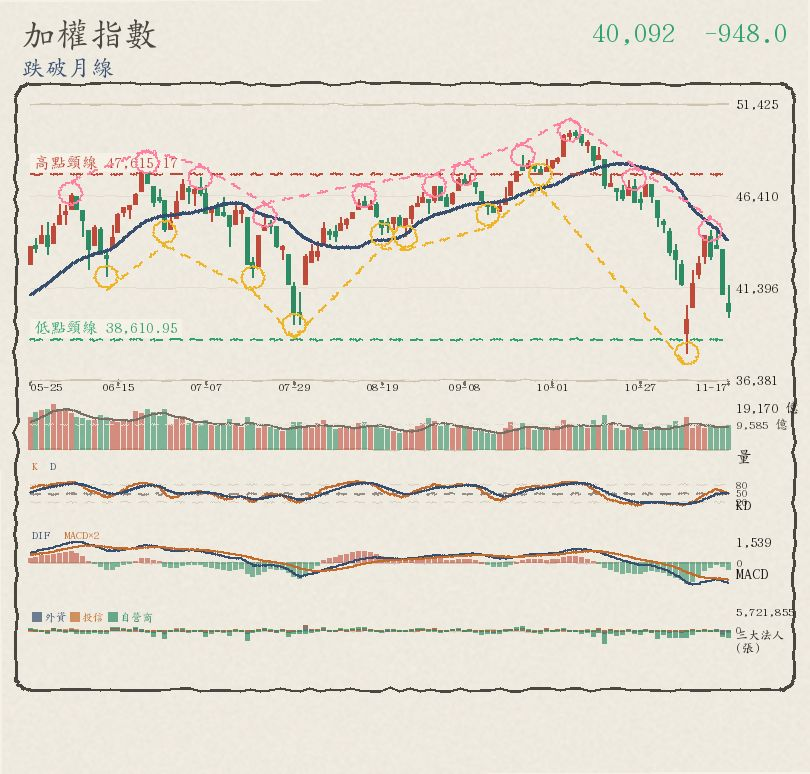
圖說：加權指數日 K（與個股圖相同標記）：黃圈＝轉折低點、粉圈＝轉折高點、虛線小圈＝還沒確認的轉折、藍線＝月線 MA20、水平虛線＝高點／低點頸線。最後一根是資料日當天。
本區塊為公開資料的技術面觀察，不構成投資建議，
不報牌、不預測、不下買賣決策。成交金額為集中市場總成交金額（含 ETF／權證），
與頁首摘要的「上市個股成交金額」口徑不同。標籤是統計，不是評分、也不是推薦。
上市 vs 上櫃（同期快篩）
加權 -2.31% vs 櫃買 -3.92%（同向） → 同向
（兩個市場分開寫，不合併成一個數字；櫃買為 TPEX 公開資料）
櫃買歷史：TPEX 逐日回補 130 根；來源：櫃買中心 www/zh-tw/indexInfo/sectinx（逐日，官方；OpenAPI tpex_index 只回當月）
（TPEX OpenAPI 只回當月，故逐日回補；歷史不足就不算該條均線並標「資料不足」，不用錯數字）
近 20 個交易日大盤狀態回溯（最新在上）（點開看逐日主狀態／量比／量價象限）
用同一支程式回算最近 20 個交易日（主狀態 S1~S8 與量比 20 皆為當日收盤當時的判定，
不是事後調整）；量比 20 未公布的日子寫「—」。
好條件最多的（前 10）
不好條件最多的（前 10）
好條件（7 項）：站上月線、月線向上、底底高、頭頭高、突破頸線、攻擊量（量增＋上漲）、守住今日高檔（距今日高點 1% 內）。
不好條件（7 項）：跌破前低、今日下跌、相對大盤弱、在月線之下、貼近今日低點（1% 內）、跌破昨日低點、月線下彎。
兩邊都是同一組日線資料＋盤中即時價算出來的「符合項目數」，只是把方向相反的條件分開數；
條件數不是評分或推薦，不構成投資建議。
盤中爆量（估量比 ≥ 1.5）（40 上市 27／上櫃 13）
跌破前低（線型轉弱）（24 上市 18／上櫃 6）
今日疲弱（跌幅前 10）（10 上市 7／上櫃 3）
逐檔（70 檔，依盤中成交金額排序）
台積電 2330 上市
2195 +25.0（+1.15%）
區間或轉弱 盤中成交值 624.26 億・全榜第 1 名（上市第 1 名）・相對大盤 -0.26
好條件 1/7：守住今日高檔（距今日高點 1% 內）
不好條件 3/7：相對大盤弱、在月線之下、月線下彎
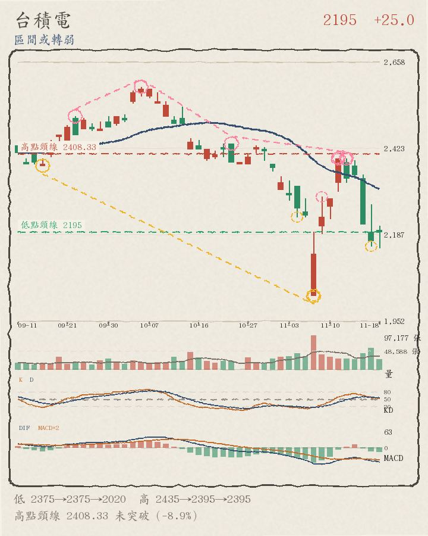
12:31 盤中 2195（+1.15%），比加權指數弱 0.26 個百分點、跌破月線 2322.75，離高點頸線 2408.33 還差 8.9%，轉折還沒走出明顯方向。
- 月線位置：現價 2195 在月線 2322.75 之下（-5.5%）；5 日線 2294 也在月線之下（短均在下）；月線向下
- 量能：以已過交易時間推估，今天成交量約是 20 日均量的 1.07 倍（量平），比 20 日均量大一些
- 關鍵價位：高點頸線 2408.33 還沒突破，差 8.9%；前一交易日高點 2270（低於 3.3%）；今天盤中高點 2210（低於 0.7%）；今天盤中低點 2150（高於 2.1%）
- 轉折結構：低點 2375、2375、2020 與高點 2435、2395、2395 都沒有明顯遞增，屬於區間震盪或轉弱；還沒確認的轉折低點 11-06 2020、11-17 2155；還沒確認的轉折高點 11-11 2395、11-12 2395（圖上虛線小圈）
量平
↑ 回上方清單
聯發科 2454 上市
4070 +230.0（+5.99%）
區間或轉弱 盤中成交值 490.48 億・全榜第 2 名（上市第 2 名）・相對大盤 +4.58
好條件 3/7：站上月線、攻擊量（量增＋上漲）、守住今日高檔（距今日高點 1% 內）
不好條件 1/7：月線下彎
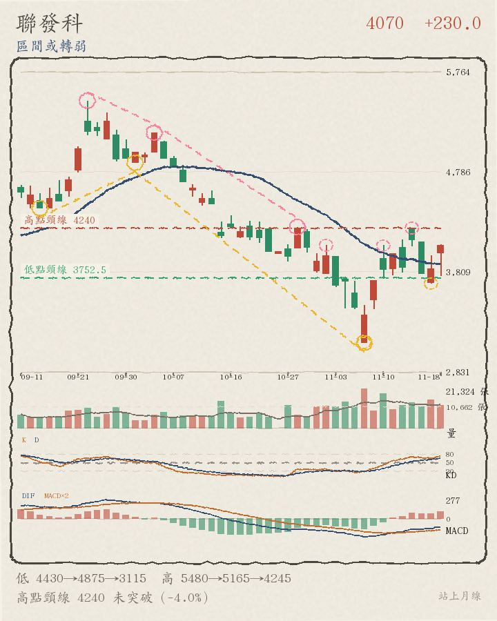
12:31 盤中 4070（+5.99%），比加權指數強 4.58 個百分點、站上月線 3891.25，離高點頸線 4240 還差 4.0%，轉折還沒走出明顯方向。
- 月線位置：現價 4070 在月線 3891.25 之上（+4.6%）；5 日線 3919 也在月線之上（短均在上）；月線向下
- 量能：以已過交易時間推估，今天成交量約是 20 日均量的 1.42 倍（量增），比 20 日均量大不少；上漲又量增，量價配合
- 關鍵價位：高點頸線 4240 還沒突破，差 4.0%；前一交易日高點 3970（高於 2.5%）；今天盤中高點 4075（低於 0.1%）；今天盤中低點 3775（高於 7.8%）
- 轉折結構：低點 4430、4875、3115 與高點 5480、5165、4245 都沒有明顯遞增，屬於區間震盪或轉弱；還沒確認的轉折低點 11-06 3115、11-17 3695；還沒確認的轉折高點 11-10 4065、11-13 4235（圖上虛線小圈）
景碩 3189 上市
596 +54.0（+9.96%）
區間或轉弱 盤中成交值 400.77 億・全榜第 3 名（上市第 3 名）・相對大盤 +8.55
好條件 1/7：攻擊量（量增＋上漲）
不好條件 3/7：跌破前低、在月線之下、月線下彎
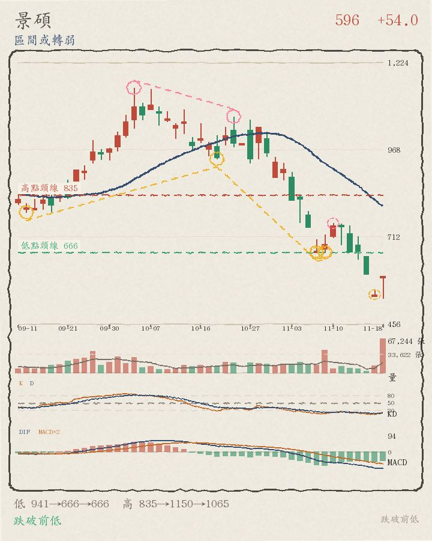
12:31 盤中 596（+9.96%），比加權指數強 8.55 個百分點、跌破月線 820.55，離高點頸線 835 還差 28.6%，轉折還沒走出明顯方向。
- 月線位置：現價 596 在月線 820.55 之下（-27.4%）；5 日線 644 也在月線之下（短均在下）；月線向下
- 量能：以已過交易時間推估，今天成交量約是 20 日均量的 5.32 倍（爆量），比 20 日均量大不少；上漲又量增，量價配合
- 關鍵價位：已跌破前一個轉折低點；高點頸線 835 還在現價上方 28.6%；前一交易日高點 553（高於 7.8%）；今天盤中高點 596（高於 0.0%）；今天盤中低點 530（高於 12.5%）
- 轉折結構：低點 941、666、666 與高點 835、1150、1065 都沒有明顯遞增，屬於區間震盪或轉弱；還沒確認的轉折低點 11-09 666、11-17 542；還沒確認的轉折高點 11-10 752（圖上虛線小圈）
創意 3443 上市
6890 -85.0（-1.22%）
高點墊高、底部不穩 盤中成交值 346.36 億・全榜第 4 名（上市第 4 名）・相對大盤 -2.63
好條件 1/7：頭頭高
不好條件 5/7：今日下跌、相對大盤弱、在月線之下、跌破昨日低點、月線下彎
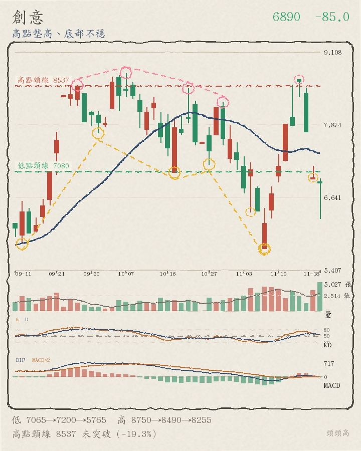
12:31 盤中 6890（-1.22%），比加權指數弱 2.63 個百分點、跌破月線 7427.5，離高點頸線 8537 還差 19.3%，高點還在墊高（但底部沒同步墊高）。
- 月線位置：現價 6890 在月線 7427.5 之下（-7.2%）；5 日線 7816 也在月線之上（短均在上）；月線向下
- 量能：以已過交易時間推估，今天成交量約是 20 日均量的 2.57 倍（爆量），比 20 日均量大不少；下跌卻量增，量價背離
- 關鍵價位：高點頸線 8537 還沒突破，差 19.3%；前一交易日高點 7175（低於 4.0%）；今天盤中高點 6960（低於 1.0%）；今天盤中低點 6280（高於 9.7%）
- 轉折結構：高點 8750、8490、8255 墊高（頭頭高），但低點 7065、7200、5765 沒有同步墊高；還沒確認的轉折低點 11-06 5765、11-17 6975；還沒確認的轉折高點 11-13 8645（圖上虛線小圈）
南亞 1303 上市
258 -3.5（-1.34%）
區間或轉弱 盤中成交值 278.93 億・全榜第 5 名（上市第 5 名）・相對大盤 -2.75
好條件 0/7：無
不好條件 4/7：今日下跌、相對大盤弱、在月線之下、月線下彎
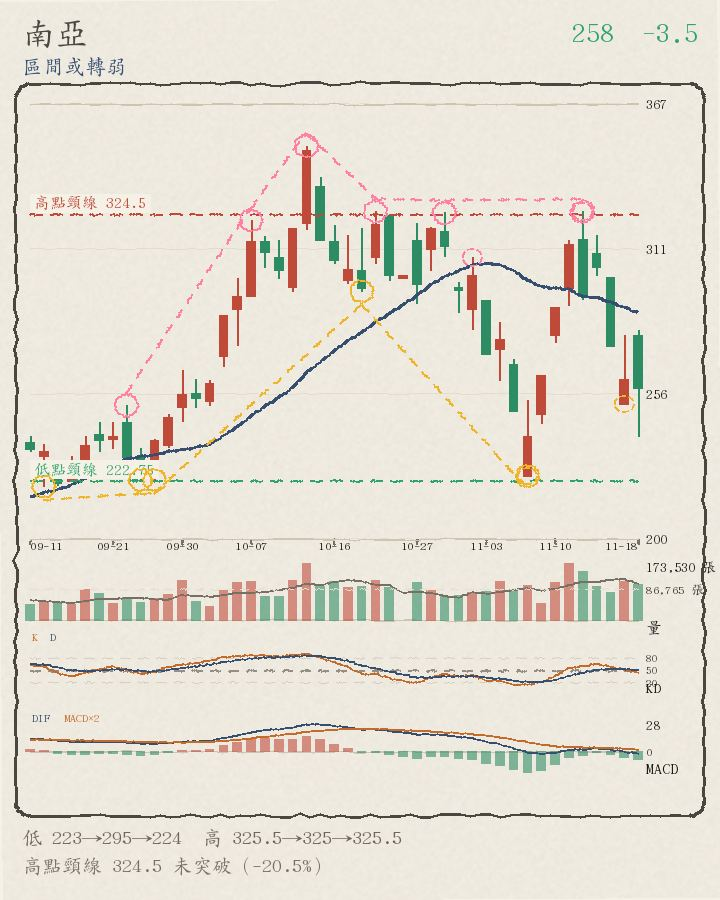
12:31 盤中 258（-1.34%），比加權指數弱 2.75 個百分點、跌破月線 288.875，離高點頸線 324.5 還差 20.5%，轉折還沒走出明顯方向。
- 月線位置：現價 258 在月線 288.875 之下（-10.7%）；5 日線 289.1 也在月線之上（短均在上）；月線向下
- 量能：以已過交易時間推估，今天成交量約是 20 日均量的 1.36 倍（量增），比 20 日均量大不少；下跌卻量增，量價背離
- 關鍵價位：高點頸線 324.5 還沒突破，差 20.5%；前一交易日高點 278（低於 7.2%）；今天盤中高點 280（低於 7.9%）；今天盤中低點 239.5（高於 7.7%）
- 轉折結構：低點 223、295、224.5 與高點 325.5、325、325.5 都沒有明顯遞增，屬於區間震盪或轉弱；還沒確認的轉折低點 11-06 224.5、11-17 252；還沒確認的轉折高點 11-02 308、11-12 325.5（圖上虛線小圈）
量增
↑ 回上方清單
欣興 3037 上市
675 +38.0（+5.97%）
區間或轉弱 盤中成交值 268.9 億・全榜第 6 名（上市第 6 名）・相對大盤 +4.56
好條件 1/7：攻擊量（量增＋上漲）
不好條件 3/7：跌破前低、在月線之下、月線下彎
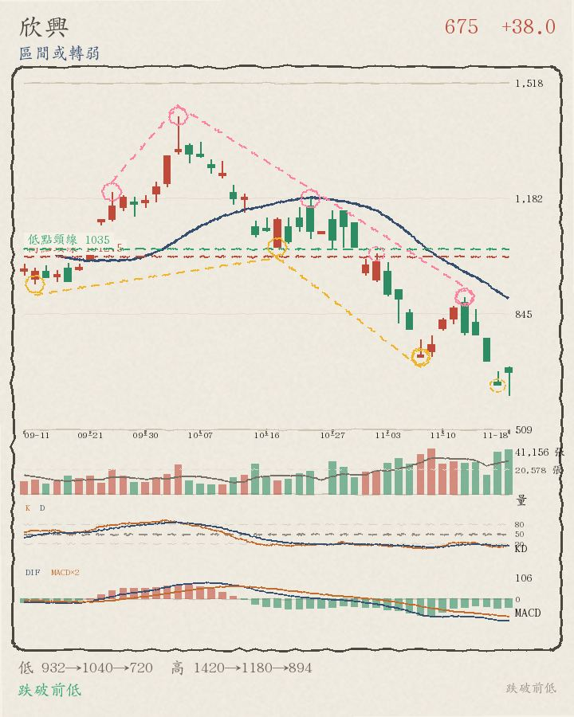
12:31 盤中 675（+5.97%），比加權指數強 4.56 個百分點、跌破月線 909.9，離高點頸線 1012.5 還差 33.3%，轉折還沒走出明顯方向。
- 月線位置：現價 675 在月線 909.9 之下（-25.8%）；5 日線 757 也在月線之下（短均在下）；月線向下
- 量能：以已過交易時間推估，今天成交量約是 20 日均量的 2.08 倍（爆量），比 20 日均量大不少；上漲又量增，量價配合
- 關鍵價位：已跌破前一個轉折低點；高點頸線 1012.5 還在現價上方 33.3%；前一交易日高點 677（低於 0.3%）；今天盤中高點 691（低於 2.3%）；今天盤中低點 607（高於 11.2%）
- 轉折結構：低點 932、1040、720 與高點 1420、1180、894 都沒有明顯遞增，屬於區間震盪或轉弱；還沒確認的轉折低點 11-06 720、11-17 637；還沒確認的轉折高點 11-02 1020、11-12 894（圖上虛線小圈）
穩懋 3105 上櫃
479.5 -1.5（-0.31%）
區間或轉弱 盤中成交值 216.19 億・全榜第 7 名（上櫃第 1 名）・相對大盤 -1.72
好條件 1/7：月線向上
不好條件 3/7：今日下跌、相對大盤弱、在月線之下
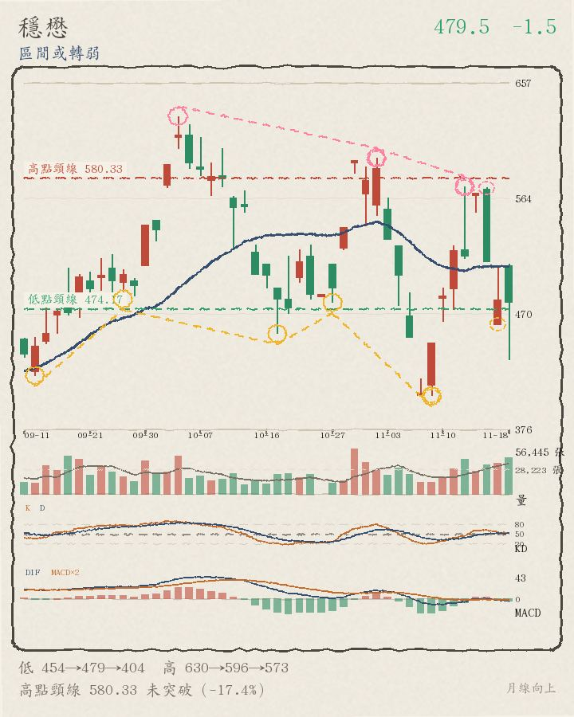
12:31 盤中 479.5（-0.31%），比加權指數弱 1.72 個百分點、跌破月線 508.4，離高點頸線 580.33 還差 17.4%，轉折還沒走出明顯方向。
- 月線位置：現價 479.5 在月線 508.4 之下（-5.7%）；5 日線 519.8 也在月線之上（短均在上）；月線向上
- 量能：以已過交易時間推估，今天成交量約是 20 日均量的 2.12 倍（爆量），比 20 日均量大不少；下跌卻量增，量價背離
- 關鍵價位：高點頸線 580.33 還沒突破，差 17.4%；前一交易日高點 507（低於 5.4%）；今天盤中高點 510（低於 6.0%）；今天盤中低點 433（高於 10.7%）
- 轉折結構：低點 454、479、403.5 與高點 630、596、573 都沒有明顯遞增，屬於區間震盪或轉弱；還沒確認的轉折低點 11-09 403.5、11-17 461.5；還沒確認的轉折高點 11-12 573、11-16 572（圖上虛線小圈）
健策 3653 上市
4765 +430.0（+9.92%）
區間或轉弱 盤中成交值 199.27 億・全榜第 8 名（上市第 7 名）・相對大盤 +8.51
好條件 1/7：攻擊量（量增＋上漲）
不好條件 3/7：跌破前低、在月線之下、月線下彎
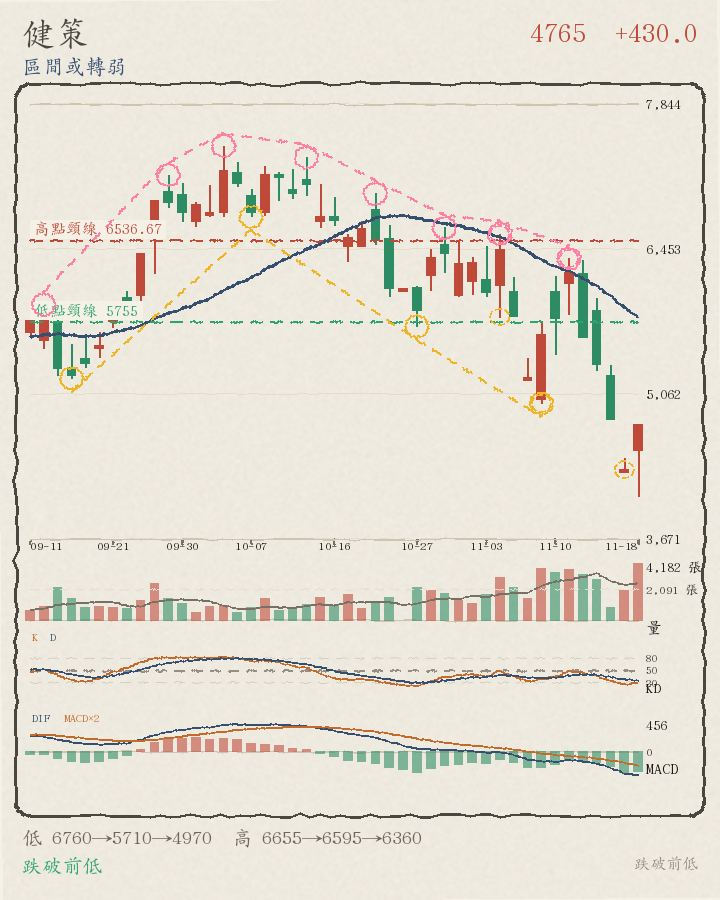
12:31 盤中 4765（+9.92%），比加權指數強 8.51 個百分點、跌破月線 5893.25，離高點頸線 6536.67 還差 27.1%，轉折還沒走出明顯方向。
- 月線位置：現價 4765 在月線 5893.25 之下（-19.1%）；5 日線 5265 也在月線之下（短均在下）；月線向下
- 量能：以已過交易時間推估，今天成交量約是 20 日均量的 2.43 倍（爆量），比 20 日均量大不少；上漲又量增，量價配合
- 關鍵價位：已跌破前一個轉折低點；高點頸線 6536.67 還在現價上方 27.1%；前一交易日高點 4445（高於 7.2%）；今天盤中高點 4765（高於 0.0%）；今天盤中低點 4075（高於 16.9%）
- 轉折結構：低點 6760、5710、4970 與高點 6655、6595、6360 都沒有明顯遞增，屬於區間震盪或轉弱；還沒確認的轉折低點 11-09 4970、11-17 4335；還沒確認的轉折高點 11-04 6595、11-11 6360（圖上虛線小圈）
台光電 2383 上市
3525 -15.0（-0.42%）
區間或轉弱 盤中成交值 181.61 億・全榜第 9 名（上市第 8 名）・相對大盤 -1.83
好條件 0/7：無
不好條件 5/7：跌破前低、今日下跌、相對大盤弱、在月線之下、月線下彎

12:31 盤中 3525（-0.42%），比加權指數弱 1.83 個百分點、跌破月線 4485，離高點頸線 5232.5 還差 32.6%，轉折還沒走出明顯方向。
- 月線位置：現價 3525 在月線 4485 之下（-21.4%）；5 日線 4031 也在月線之下（短均在下）；月線向下
- 量能：以已過交易時間推估，今天成交量約是 20 日均量的 1.77 倍（爆量），比 20 日均量大不少；下跌卻量增，量價背離
- 關鍵價位：已跌破前一個轉折低點；高點頸線 5232.5 還在現價上方 32.6%；前一交易日高點 3715（低於 5.1%）；今天盤中高點 3680（低於 4.2%）；今天盤中低點 3275（高於 7.6%）
- 轉折結構：低點 4855、4930、3690 與高點 5485、5295、4565 都沒有明顯遞增，屬於區間震盪或轉弱；還沒確認的轉折低點 11-12 4065、11-17 3420；還沒確認的轉折高點 11-02 4835、11-11 4565（圖上虛線小圈）
台達電 2308 上市
1090 +35.0（+3.32%）
區間或轉弱 盤中成交值 173.7 億・全榜第 10 名（上市第 9 名）・相對大盤 +1.91
好條件 2/7：攻擊量（量增＋上漲）、守住今日高檔（距今日高點 1% 內）
不好條件 2/7：在月線之下、月線下彎

12:31 盤中 1090（+3.32%），比加權指數強 1.91 個百分點、跌破月線 1332，離高點頸線 1985 還差 45.1%，轉折還沒走出明顯方向。
- 月線位置：現價 1090 在月線 1332 之下（-18.2%）；5 日線 1190 也在月線之下（短均在下）；月線向下
- 量能：以已過交易時間推估，今天成交量約是 20 日均量的 1.29 倍（量增），比 20 日均量大不少；上漲又量增，量價配合
- 關鍵價位：高點頸線 1985 還沒突破，差 45.1%；前一交易日高點 1105（低於 1.4%）；今天盤中高點 1100（低於 0.9%）；今天盤中低點 1000（高於 9.0%）
- 轉折結構：低點 1560、1810、1020 與高點 1965、2115、1335 都沒有明顯遞增，屬於區間震盪或轉弱；還沒確認的轉折低點 11-11 1230、11-17 1025；還沒確認的轉折高點 11-12 1335（圖上虛線小圈）
量增
↑ 回上方清單
國巨* 2327 上市
357 -4.0（-1.11%）
區間或轉弱 盤中成交值 164.94 億・全榜第 11 名（上市第 10 名）・相對大盤 -2.52
好條件 0/7：無
不好條件 5/7：跌破前低、今日下跌、相對大盤弱、在月線之下、月線下彎
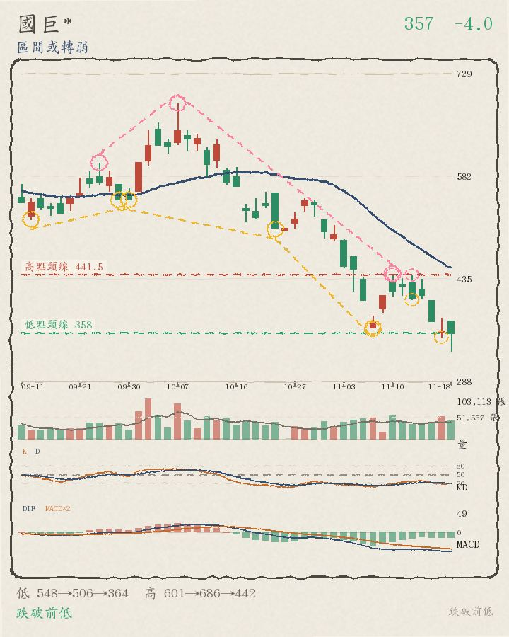
12:31 盤中 357（-1.11%），比加權指數弱 2.52 個百分點、跌破月線 458.8，離高點頸線 441.5 還差 19.1%，轉折還沒走出明顯方向。
- 月線位置：現價 357 在月線 458.8 之下（-22.2%）；5 日線 395.5 也在月線之下（短均在下）；月線向下
- 量能：以已過交易時間推估，今天成交量約是 20 日均量的 1.49 倍（量增），比 20 日均量大不少；下跌卻量增，量價背離
- 關鍵價位：已跌破前一個轉折低點；高點頸線 441.5 還在現價上方 19.1%；前一交易日高點 378.5（低於 5.7%）；今天盤中高點 375（低於 4.8%）；今天盤中低點 331（高於 7.9%）
- 轉折結構：低點 548、506、364.5 與高點 601、686、442 都沒有明顯遞增，屬於區間震盪或轉弱；還沒確認的轉折低點 11-12 405.5、11-17 351.5；還沒確認的轉折高點 11-10 442、11-12 441（圖上虛線小圈）
南電 8046 上市
800 +8.0（+1.01%）
區間或轉弱 盤中成交值 157.48 億・全榜第 12 名（上市第 11 名）・相對大盤 -0.40
好條件 1/7：攻擊量（量增＋上漲）
不好條件 4/7：跌破前低、相對大盤弱、在月線之下、月線下彎

12:31 盤中 800（+1.01%），比加權指數弱 0.40 個百分點、跌破月線 1099.55，離高點頸線 1102.5 還差 27.4%，轉折還沒走出明顯方向。
- 月線位置：現價 800 在月線 1099.55 之下（-27.2%）；5 日線 940.2 也在月線之下（短均在下）；月線向下
- 量能：以已過交易時間推估，今天成交量約是 20 日均量的 2.54 倍（爆量），比 20 日均量大不少；上漲又量增，量價配合
- 關鍵價位：已跌破前一個轉折低點；高點頸線 1102.5 還在現價上方 27.4%；前一交易日高點 823（低於 2.8%）；今天盤中高點 846（低於 5.4%）；今天盤中低點 716（高於 11.7%）
- 轉折結構：低點 1025、1050、867 與高點 1560、1400、1080 都沒有明顯遞增，屬於區間震盪或轉弱；還沒確認的轉折低點 11-12 972、11-17 792；還沒確認的轉折高點 11-02 1220、11-11 1080（圖上虛線小圈）
世芯-KY 3661 上市
3950 +355.0（+9.87%）
高點墊高、底部不穩 盤中成交值 153.69 億・全榜第 13 名（上市第 12 名）・相對大盤 +8.46
好條件 4/7：站上月線、頭頭高、突破頸線、攻擊量（量增＋上漲）
不好條件 1/7：月線下彎
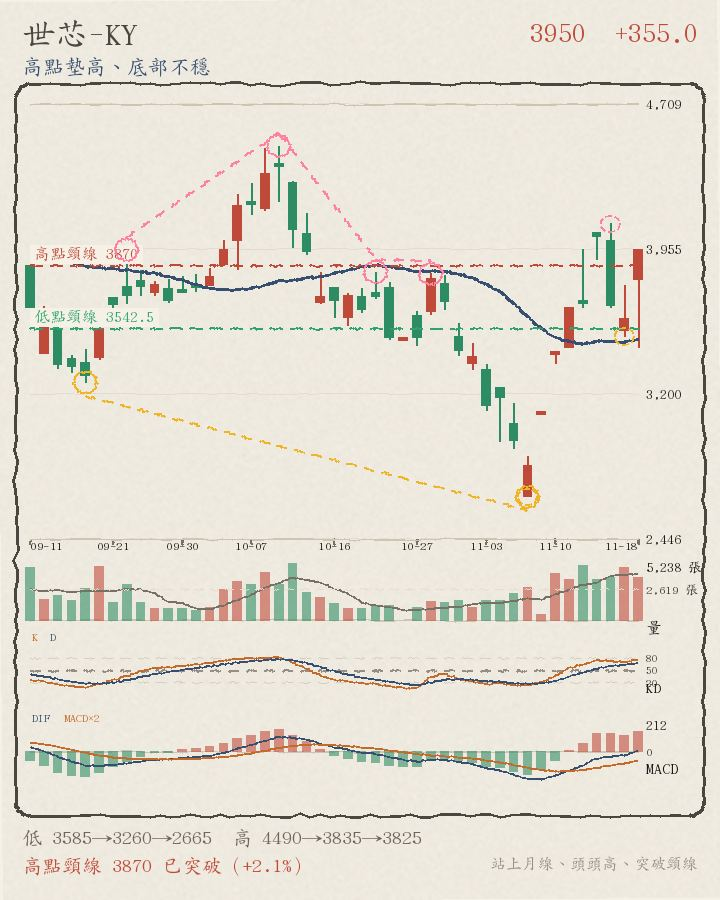
12:31 盤中 3950（+9.87%），比加權指數強 8.46 個百分點、站上月線 3468.75，已突破高點頸線 3870，高點還在墊高（但底部沒同步墊高）。
- 月線位置：現價 3950 在月線 3468.75 之上（+13.9%）；5 日線 3720 也在月線之上（短均在上）；月線向下
- 量能：以已過交易時間推估，今天成交量約是 20 日均量的 2.23 倍（爆量），比 20 日均量大不少；上漲又量增，量價配合
- 關鍵價位：高點頸線 3870 已站上；前一交易日高點 3765（高於 4.9%）；今天盤中高點 3950（高於 0.0%）；今天盤中低點 3440（高於 14.8%）
- 轉折結構：高點 4490、3835、3825 墊高（頭頭高），但低點 3585、3260、2665 沒有同步墊高；還沒確認的轉折低點 11-06 2665、11-17 3500；還沒確認的轉折高點 11-16 4085（圖上虛線小圈）
奇鋐 3017 上市
2715 +245.0（+9.92%）
區間或轉弱 盤中成交值 139.25 億・全榜第 14 名（上市第 13 名）・相對大盤 +8.51
好條件 1/7：攻擊量（量增＋上漲）
不好條件 2/7：在月線之下、月線下彎
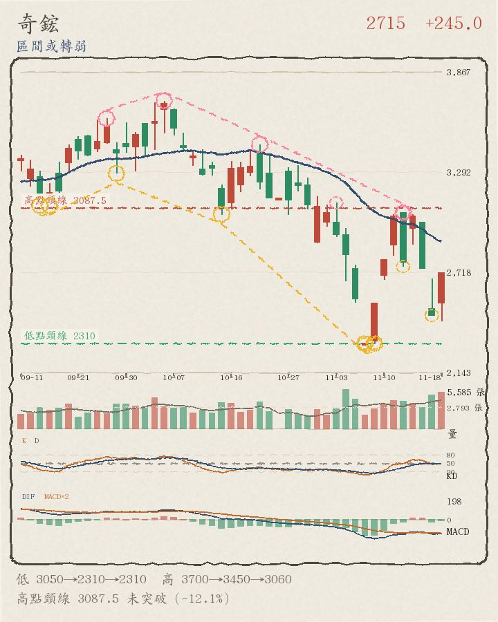
12:31 盤中 2715（+9.92%），比加權指數強 8.51 個百分點、跌破月線 2924，離高點頸線 3087.5 還差 12.1%，轉折還沒走出明顯方向。
- 月線位置：現價 2715 在月線 2924 之下（-7.2%）；5 日線 2813 也在月線之下（短均在下）；月線向下
- 量能：以已過交易時間推估，今天成交量約是 20 日均量的 2.17 倍（爆量），比 20 日均量大不少；上漲又量增，量價配合
- 關鍵價位：高點頸線 3087.5 還沒突破，差 12.1%；前一交易日高點 2680（高於 1.3%）；今天盤中高點 2715（高於 0.0%）；今天盤中低點 2440（高於 11.3%）
- 轉折結構：低點 3050、2310、2310 與高點 3700、3450、3060 都沒有明顯遞增，屬於區間震盪或轉弱；還沒確認的轉折低點 11-12 2750、11-17 2470；還沒確認的轉折高點 11-03 3115、11-12 3060（圖上虛線小圈）
台燿 6274 上櫃
796 +6.0（+0.76%）
區間或轉弱 盤中成交值 135.36 億・全榜第 15 名（上櫃第 2 名）・相對大盤 -0.65
好條件 1/7：攻擊量（量增＋上漲）
不好條件 4/7：跌破前低、相對大盤弱、在月線之下、月線下彎
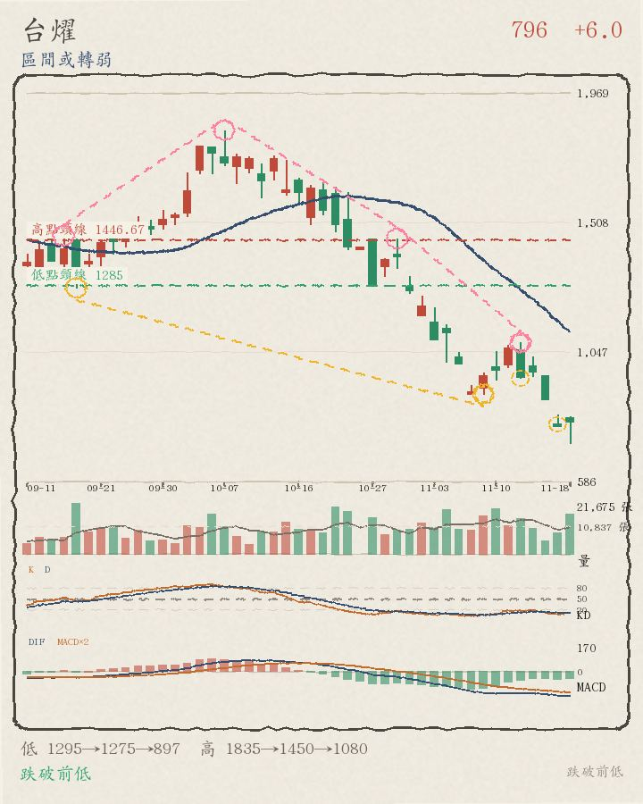
12:31 盤中 796（+0.76%），比加權指數弱 0.65 個百分點、跌破月線 1156.35，離高點頸線 1446.67 還差 45.0%，轉折還沒走出明顯方向。
- 月線位置：現價 796 在月線 1156.35 之下（-31.2%）；5 日線 931.4 也在月線之下（短均在下）；月線向下
- 量能：以已過交易時間推估，今天成交量約是 20 日均量的 1.70 倍（爆量），比 20 日均量大不少；上漲又量增，量價配合
- 關鍵價位：已跌破前一個轉折低點；高點頸線 1446.67 還在現價上方 45.0%；前一交易日高點 824（低於 3.4%）；今天盤中高點 816（低於 2.5%）；今天盤中低點 720（高於 10.6%）
- 轉折結構：低點 1295、1275、897 與高點 1835、1450、1080 都沒有明顯遞增，屬於區間震盪或轉弱；還沒確認的轉折低點 11-12 954、11-17 790；還沒確認的轉折高點 11-12 1080（圖上虛線小圈）
南亞科 2408 上市
330 +1.0（+0.30%）
區間或轉弱 盤中成交值 129.99 億・全榜第 16 名（上市第 14 名）・相對大盤 -1.11
好條件 0/7：無
不好條件 3/7：相對大盤弱、在月線之下、月線下彎
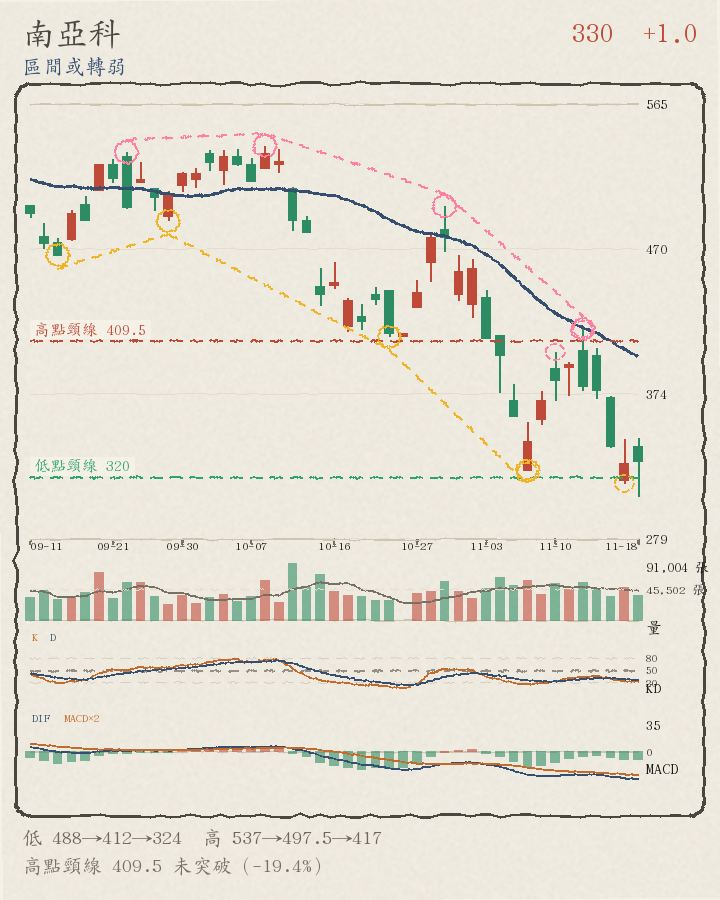
12:31 盤中 330（+0.30%），比加權指數弱 1.11 個百分點、跌破月線 403.95，離高點頸線 409.5 還差 19.4%，轉折還沒走出明顯方向。
- 月線位置：現價 330 在月線 403.95 之下（-18.3%）；5 日線 363.9 也在月線之下（短均在下）；月線向下
- 量能：以已過交易時間推估，今天成交量約是 20 日均量的 1.07 倍（量平），比 20 日均量大一些
- 關鍵價位：高點頸線 409.5 還沒突破，差 19.4%；前一交易日高點 344.5（低於 4.2%）；今天盤中高點 345（低於 4.3%）；今天盤中低點 307（高於 7.5%）
- 轉折結構：低點 488、412、324 與高點 537、497.5、417 都沒有明顯遞增，屬於區間震盪或轉弱；還沒確認的轉折低點 11-06 324、11-17 316；還沒確認的轉折高點 11-10 402、11-12 417（圖上虛線小圈）
量平
↑ 回上方清單
日月光投控 3711 上市
564 +44.0（+8.46%）
區間或轉弱 盤中成交值 129.17 億・全榜第 17 名（上市第 15 名）・相對大盤 +7.05
好條件 2/7：攻擊量（量增＋上漲）、守住今日高檔（距今日高點 1% 內）
不好條件 2/7：在月線之下、月線下彎
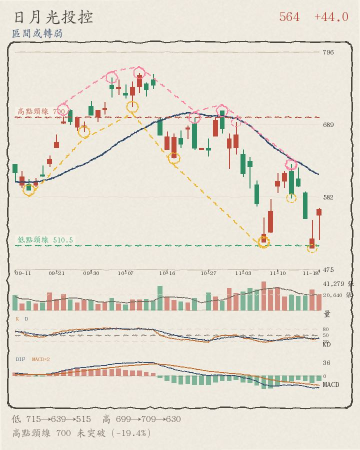
12:31 盤中 564（+8.46%），比加權指數強 7.05 個百分點、跌破月線 620.1，離高點頸線 700 還差 19.4%，轉折還沒走出明顯方向。
- 月線位置：現價 564 在月線 620.1 之下（-9.1%）；5 日線 574.2 也在月線之下（短均在下）；月線向下
- 量能：以已過交易時間推估，今天成交量約是 20 日均量的 1.27 倍（量增），比 20 日均量大不少；上漲又量增，量價配合
- 關鍵價位：高點頸線 700 還沒突破，差 19.4%；前一交易日高點 548（高於 2.9%）；今天盤中高點 565（低於 0.2%）；今天盤中低點 519（高於 8.7%）
- 轉折結構：低點 715、639、515 與高點 699、709、630 都沒有明顯遞增，屬於區間震盪或轉弱；還沒確認的轉折低點 11-12 580、11-17 506；還沒確認的轉折高點 11-02 692、11-12 630（圖上虛線小圈）
量增
↑ 回上方清單
富喬 1815 上櫃
123.5 +5.5（+4.66%）
區間或轉弱 盤中成交值 126.5 億・全榜第 18 名（上櫃第 3 名）・相對大盤 +3.25
好條件 1/7：守住今日高檔（距今日高點 1% 內）
不好條件 2/7：在月線之下、月線下彎
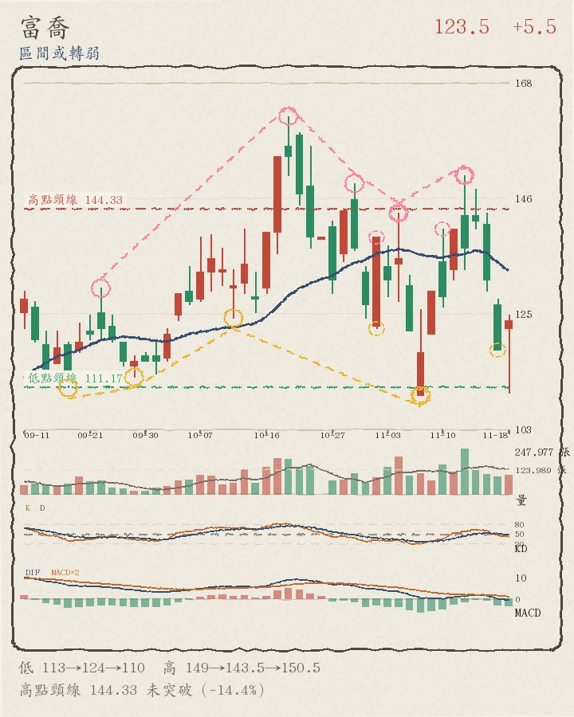
12:31 盤中 123.5（+4.66%），比加權指數強 3.25 個百分點、跌破月線 134.35，離高點頸線 144.33 還差 14.4%，轉折還沒走出明顯方向。
- 月線位置：現價 123.5 在月線 134.35 之下（-8.1%）；5 日線 133.7 也在月線之下（短均在下）；月線向下
- 量能：以已過交易時間推估，今天成交量約是 20 日均量的 1.00 倍（量平），跟 20 日均量差不多
- 關鍵價位：高點頸線 144.33 還沒突破，差 14.4%；前一交易日高點 127.5（低於 3.1%）；今天盤中高點 124.5（低於 0.8%）；今天盤中低點 110（高於 12.3%）
- 轉折結構：低點 113、124、109.5 與高點 149、143.5、150.5 都沒有明顯遞增，屬於區間震盪或轉弱；還沒確認的轉折低點 11-06 109.5、11-17 118；還沒確認的轉折高點 11-10 140.5、11-12 150.5（圖上虛線小圈）
量平
↑ 回上方清單
精材 3374 上櫃
402.5 -18.5（-4.39%）
高點墊高、底部不穩 盤中成交值 117.27 億・全榜第 19 名（上櫃第 4 名）・相對大盤 -5.80
好條件 2/7：月線向上、頭頭高
不好條件 4/7：今日下跌、相對大盤弱、在月線之下、跌破昨日低點
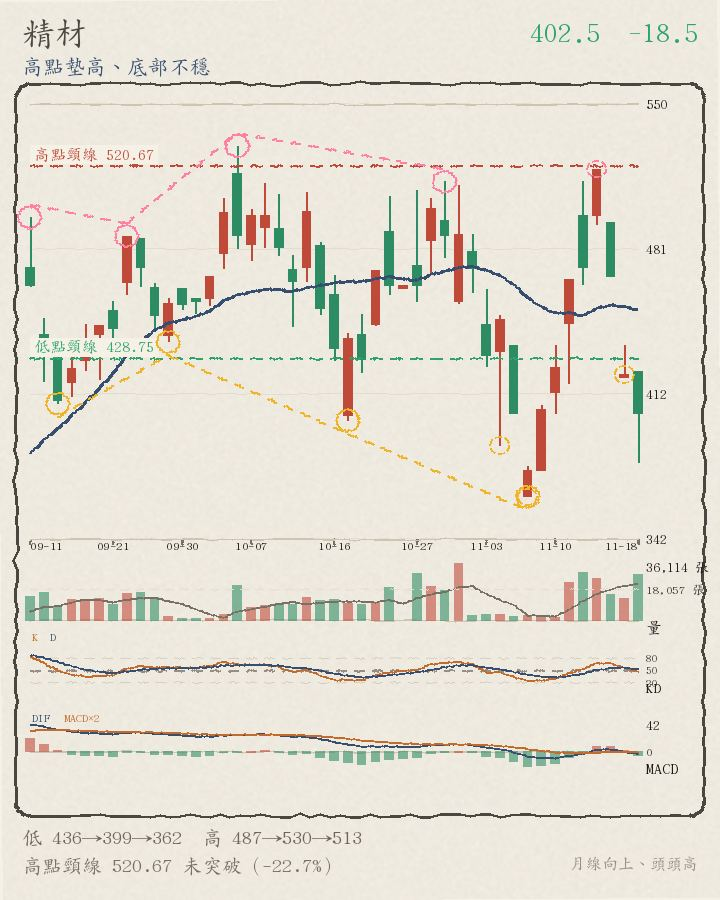
12:31 盤中 402.5（-4.39%），比加權指數弱 5.80 個百分點、跌破月線 453.25，離高點頸線 520.67 還差 22.7%，高點還在墊高（但底部沒同步墊高）。
- 月線位置：現價 402.5 在月線 453.25 之下（-11.2%）；5 日線 469.2 也在月線之上（短均在上）；月線向上
- 量能：以已過交易時間推估，今天成交量約是 20 日均量的 2.59 倍（爆量），比 20 日均量大不少；下跌卻量增，量價背離
- 關鍵價位：高點頸線 520.67 還沒突破，差 22.7%；前一交易日高點 435（低於 7.5%）；今天盤中高點 422.5（低於 4.7%）；今天盤中低點 379（高於 6.2%）
- 轉折結構：高點 487、530、513 墊高（頭頭高），但低點 436.5、399、362.5 沒有同步墊高；還沒確認的轉折低點 11-06 362.5、11-17 421；還沒確認的轉折高點 11-13 519（圖上虛線小圈）
金像電 2368 上市
904 +69.0（+8.26%）
區間或轉弱 盤中成交值 112.5 億・全榜第 20 名（上市第 16 名）・相對大盤 +6.85
好條件 2/7：攻擊量（量增＋上漲）、守住今日高檔（距今日高點 1% 內）
不好條件 2/7：在月線之下、月線下彎
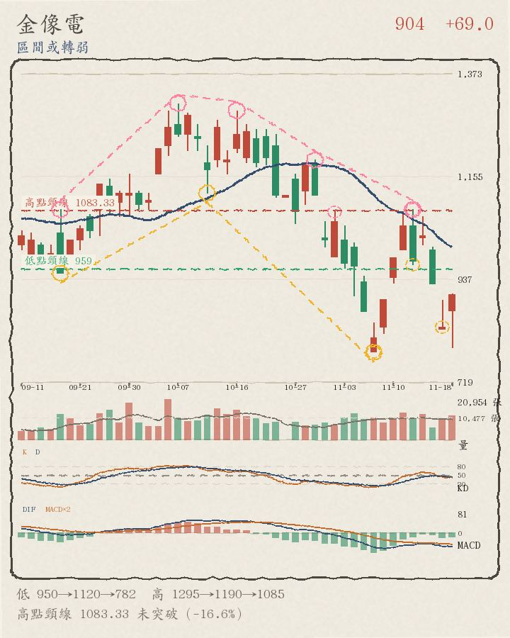
12:31 盤中 904（+8.26%），比加權指數強 6.85 個百分點、跌破月線 1018.95，離高點頸線 1083.33 還差 16.6%，轉折還沒走出明顯方向。
- 月線位置：現價 904 在月線 1018.95 之下（-11.3%）；5 日線 963.4 也在月線之下（短均在下）；月線向下
- 量能：以已過交易時間推估，今天成交量約是 20 日均量的 1.60 倍（爆量），比 20 日均量大不少；上漲又量增，量價配合
- 關鍵價位：高點頸線 1083.33 還沒突破，差 16.6%；前一交易日高點 893（高於 1.2%）；今天盤中高點 906（低於 0.2%）；今天盤中低點 791（高於 14.3%）
- 轉折結構：低點 950、1120、782 與高點 1295、1190、1085 都沒有明顯遞增，屬於區間震盪或轉弱；還沒確認的轉折低點 11-12 968、11-17 835；還沒確認的轉折高點 11-02 1080、11-12 1085（圖上虛線小圈）
台玻 1802 上市
66.7 -2.3（-3.33%）
高點墊高、底部不穩 盤中成交值 111 億・全榜第 21 名（上市第 17 名）・相對大盤 -4.74
好條件 3/7：月線向上、頭頭高、突破頸線
不好條件 4/7：今日下跌、相對大盤弱、在月線之下、跌破昨日低點
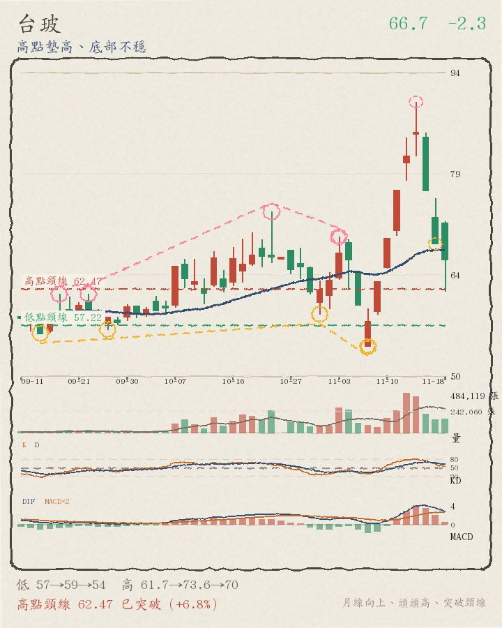
12:31 盤中 66.7（-3.33%），比加權指數弱 4.74 個百分點、跌破月線 68.115，已突破高點頸線 62.47，高點還在墊高（但底部沒同步墊高）。
- 月線位置：現價 66.7 在月線 68.115 之下（-2.1%）；5 日線 77.82 也在月線之上（短均在上）；月線向上
- 量能：以已過交易時間推估，今天成交量約是 20 日均量的 1.08 倍（量平），比 20 日均量大一些
- 關鍵價位：高點頸線 62.47 已站上；前一交易日高點 75.5（低於 11.7%）；今天盤中高點 72.2（低於 7.6%）；今天盤中低點 62.1（高於 7.4%）
- 轉折結構：高點 61.7、73.6、70 墊高（頭頭高），但低點 56.6、58.8、54.1 沒有同步墊高；還沒確認的轉折低點 11-06 54.1、11-17 69；還沒確認的轉折高點 11-03 70、11-13 89.5（圖上虛線小圈）
聯茂 6213 上市
448 +16.0（+3.70%）
區間或轉弱 盤中成交值 105.32 億・全榜第 22 名（上市第 18 名）・相對大盤 +2.29
好條件 2/7：攻擊量（量增＋上漲）、守住今日高檔（距今日高點 1% 內）
不好條件 3/7：跌破前低、在月線之下、月線下彎
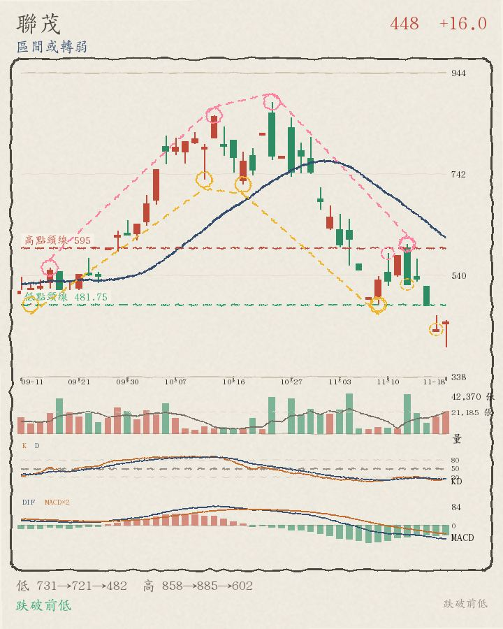
12:31 盤中 448（+3.70%），比加權指數強 2.29 個百分點、跌破月線 630.15，離高點頸線 595 還差 24.7%，轉折還沒走出明顯方向。
- 月線位置：現價 448 在月線 630.15 之下（-28.9%）；5 日線 509.4 也在月線之下（短均在下）；月線向下
- 量能：以已過交易時間推估，今天成交量約是 20 日均量的 1.63 倍（爆量），比 20 日均量大不少；上漲又量增，量價配合
- 關鍵價位：已跌破前一個轉折低點；高點頸線 595 還在現價上方 24.7%；前一交易日高點 460.5（低於 2.7%）；今天盤中高點 450（低於 0.4%）；今天盤中低點 397（高於 12.8%）
- 轉折結構：低點 731、721、481.5 與高點 858、885、602 都沒有明顯遞增，屬於區間震盪或轉弱；還沒確認的轉折低點 11-12 522、11-17 432；還沒確認的轉折高點 11-10 584、11-12 602（圖上虛線小圈）
臻鼎-KY 4958 上市
389 +18.5（+4.99%）
區間或轉弱 盤中成交值 98.22 億・全榜第 23 名（上市第 19 名）・相對大盤 +3.58
好條件 1/7：攻擊量（量增＋上漲）
不好條件 2/7：在月線之下、月線下彎
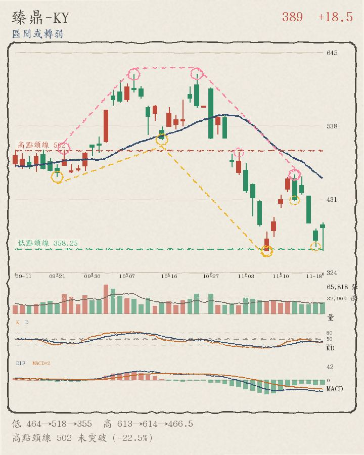
12:31 盤中 389（+4.99%），比加權指數強 3.58 個百分點、跌破月線 469.55，離高點頸線 502 還差 22.5%，轉折還沒走出明顯方向。
- 月線位置：現價 389 在月線 469.55 之下（-17.1%）；5 日線 419.5 也在月線之下（短均在下）；月線向下
- 量能：以已過交易時間推估，今天成交量約是 20 日均量的 1.17 倍（量增），比 20 日均量大不少；上漲又量增，量價配合
- 關鍵價位：高點頸線 502 還沒突破，差 22.5%；前一交易日高點 388（高於 0.3%）；今天盤中高點 397（低於 2.0%）；今天盤中低點 355.5（高於 9.4%）
- 轉折結構：低點 463.5、518、355 與高點 613、614、466.5 都沒有明顯遞增，屬於區間震盪或轉弱；還沒確認的轉折低點 11-12 429、11-17 361.5；還沒確認的轉折高點 11-02 499、11-12 466.5（圖上虛線小圈）
量增
↑ 回上方清單
聯亞 3081 上櫃
1740 +30.0（+1.75%）
區間或轉弱 盤中成交值 88.39 億・全榜第 24 名（上櫃第 5 名）・相對大盤 +0.34
好條件 1/7：攻擊量（量增＋上漲）
不好條件 2/7：在月線之下、月線下彎
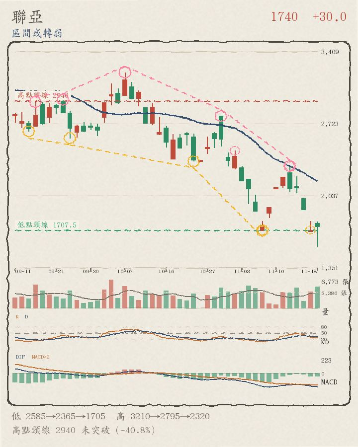
12:31 盤中 1740（+1.75%），比加權指數強 0.34 個百分點、跌破月線 2214.75，離高點頸線 2940 還差 40.8%，轉折還沒走出明顯方向。
- 月線位置：現價 1740 在月線 2214.75 之下（-21.4%）；5 日線 2007 也在月線之下（短均在下）；月線向下
- 量能：以已過交易時間推估，今天成交量約是 20 日均量的 2.03 倍（爆量），比 20 日均量大不少；上漲又量增，量價配合
- 關鍵價位：高點頸線 2940 還沒突破，差 40.8%；前一交易日高點 1795（低於 3.1%）；今天盤中高點 1790（低於 2.8%）；今天盤中低點 1550（高於 12.3%）
- 轉折結構：低點 2585、2365、1705 與高點 3210、2795、2320 都沒有明顯遞增，屬於區間震盪或轉弱；還沒確認的轉折低點 11-06 1705、11-17 1710；還沒確認的轉折高點 11-02 2465、11-12 2320（圖上虛線小圈）
大立光 3008 上市
4520 +5.0（+0.11%）
區間或轉弱 盤中成交值 83.89 億・全榜第 25 名（上市第 20 名）・相對大盤 -1.30
好條件 0/7：無
不好條件 3/7：相對大盤弱、在月線之下、月線下彎
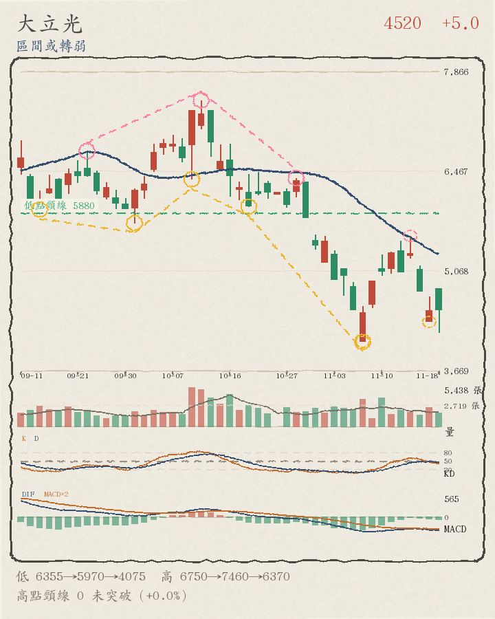
12:31 盤中 4520（+0.11%），比加權指數弱 1.30 個百分點、跌破月線 5375，轉折還沒走出明顯方向。
- 月線位置：現價 4520 在月線 5375 之下（-15.9%）；5 日線 4997 也在月線之下（短均在下）；月線向下
- 量能：以已過交易時間推估，今天成交量約是 20 日均量的 1.02 倍（量平），跟 20 日均量差不多
- 關鍵價位：前一交易日高點 4705（低於 3.9%）；今天盤中高點 4820（低於 6.2%）；今天盤中低點 4205（高於 7.5%）
- 轉折結構：低點 6355、5970、4075 與高點 6750、7460、6370 都沒有明顯遞增，屬於區間震盪或轉弱；還沒確認的轉折低點 11-06 4075、11-17 4355；還沒確認的轉折高點 11-13 5560（圖上虛線小圈）
量平
↑ 回上方清單
高力 8996 上市
1145 -25.0（-2.14%）
區間或轉弱 盤中成交值 80.37 億・全榜第 26 名（上市第 21 名）・相對大盤 -3.55
好條件 0/7：無
不好條件 6/7：跌破前低、今日下跌、相對大盤弱、在月線之下、跌破昨日低點、月線下彎
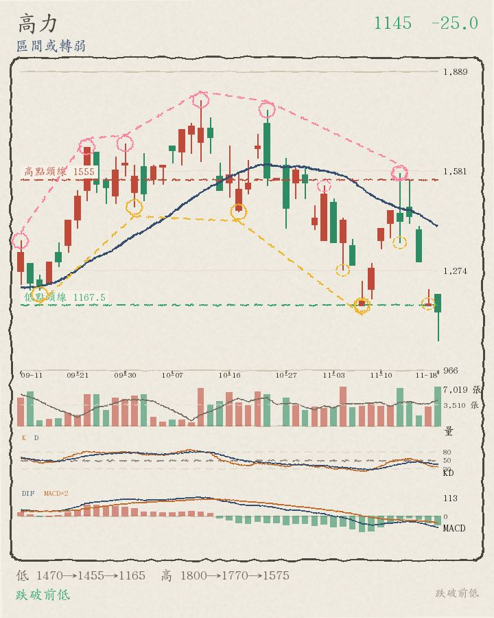
12:31 盤中 1145（-2.14%），比加權指數弱 3.55 個百分點、跌破月線 1430.25，離高點頸線 1555 還差 26.4%，轉折還沒走出明顯方向。
- 月線位置：現價 1145 在月線 1430.25 之下（-19.9%）；5 日線 1359 也在月線之下（短均在下）；月線向下
- 量能：以已過交易時間推估，今天成交量約是 20 日均量的 2.18 倍（爆量），比 20 日均量大不少；下跌卻量增，量價背離
- 關鍵價位：已跌破前一個轉折低點；高點頸線 1555 還在現價上方 26.4%；前一交易日高點 1215（低於 5.8%）；今天盤中高點 1200（低於 4.6%）；今天盤中低點 1055（高於 8.5%）
- 轉折結構：低點 1470、1455、1165 與高點 1800、1770、1575 都沒有明顯遞增，屬於區間震盪或轉弱；還沒確認的轉折低點 11-12 1360、11-17 1170；還沒確認的轉折高點 11-02 1535、11-12 1575（圖上虛線小圈）
京元電子 2449 上市
194 +17.5（+9.92%）
區間或轉弱 盤中成交值 79.7 億・全榜第 27 名（上市第 22 名）・相對大盤 +8.51
好條件 1/7：攻擊量（量增＋上漲）
不好條件 3/7：跌破前低、在月線之下、月線下彎
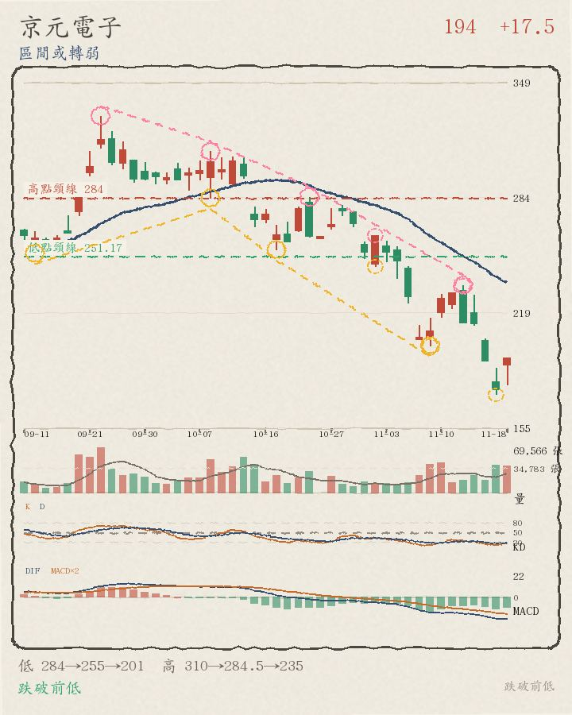
12:31 盤中 194（+9.92%），比加權指數強 8.51 個百分點、跌破月線 239.8，離高點頸線 284 還差 31.7%，轉折還沒走出明顯方向。
- 月線位置：現價 194 在月線 239.8 之下（-19.1%）；5 日線 205.5 也在月線之下（短均在下）；月線向下
- 量能：以已過交易時間推估，今天成交量約是 20 日均量的 2.44 倍（爆量），比 20 日均量大不少；上漲又量增，量價配合
- 關鍵價位：已跌破前一個轉折低點；高點頸線 284 還在現價上方 31.7%；前一交易日高點 188.5（高於 2.9%）；今天盤中高點 194（高於 0.0%）；今天盤中低點 179（高於 8.4%）
- 轉折結構：低點 284、255、201 與高點 310、284.5、235 都沒有明顯遞增，屬於區間震盪或轉弱；還沒確認的轉折低點 11-09 201、11-17 173.5；還沒確認的轉折高點 11-02 263、11-12 235（圖上虛線小圈）
華通 2313 上市
192 +7.5（+4.07%）
高點墊高、底部不穩 盤中成交值 77.33 億・全榜第 28 名（上市第 23 名）・相對大盤 +2.66
好條件 3/7：頭頭高、攻擊量（量增＋上漲）、守住今日高檔（距今日高點 1% 內）
不好條件 2/7：在月線之下、月線下彎
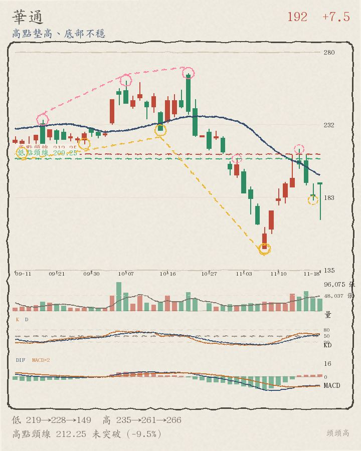
12:31 盤中 192（+4.07%），比加權指數強 2.66 個百分點、跌破月線 200.75，離高點頸線 212.25 還差 9.5%，高點還在墊高（但底部沒同步墊高）。
- 月線位置：現價 192 在月線 200.75 之下（-4.4%）；5 日線 194.3 也在月線之下（短均在下）；月線向下
- 量能：以已過交易時間推估，今天成交量約是 20 日均量的 1.63 倍（爆量），比 20 日均量大不少；上漲又量增，量價配合
- 關鍵價位：高點頸線 212.25 還沒突破，差 9.5%；前一交易日高點 192.5（低於 0.3%）；今天盤中高點 193（低於 0.5%）；今天盤中低點 168.5（高於 13.9%）
- 轉折結構：高點 235、261、266 墊高（頭頭高），但低點 219、228、149 沒有同步墊高；還沒確認的轉折低點 11-06 149、11-17 181.5；還沒確認的轉折高點 11-02 209、11-13 215.5（圖上虛線小圈）
智邦 2345 上市
1460 +130.0（+9.77%）
區間或轉弱 盤中成交值 73.13 億・全榜第 29 名（上市第 24 名）・相對大盤 +8.36
好條件 1/7：攻擊量（量增＋上漲）
不好條件 2/7：在月線之下、月線下彎
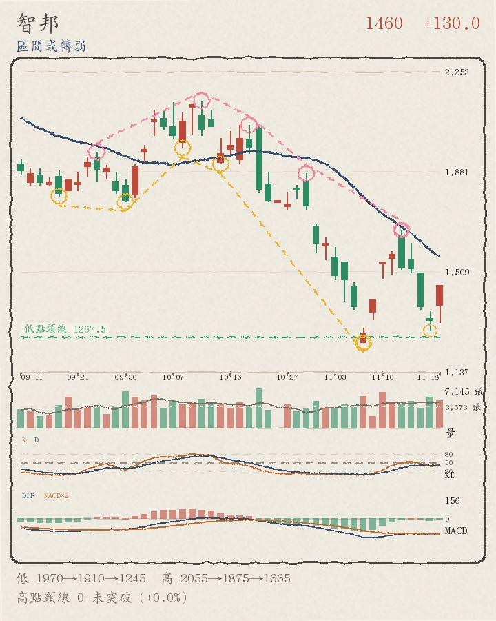
12:31 盤中 1460（+9.77%），比加權指數強 8.36 個百分點、跌破月線 1590.5，轉折還沒走出明顯方向。
- 月線位置：現價 1460 在月線 1590.5 之下（-8.2%）；5 日線 1466 也在月線之下（短均在下）；月線向下
- 量能：以已過交易時間推估，今天成交量約是 20 日均量的 1.50 倍（爆量），比 20 日均量大不少；上漲又量增，量價配合
- 關鍵價位：前一交易日高點 1365（高於 7.0%）；今天盤中高點 1460（高於 0.0%）；今天盤中低點 1320（高於 10.6%）
- 轉折結構：低點 1970、1910、1245 與高點 2055、1875、1665 都沒有明顯遞增，屬於區間震盪或轉弱；還沒確認的轉折低點 11-06 1245、11-17 1290；還沒確認的轉折高點 11-12 1665（圖上虛線小圈）
昇達科 3491 上櫃
1580 +135.0（+9.34%）
區間或轉弱 盤中成交值 72.27 億・全榜第 30 名（上櫃第 6 名）・相對大盤 +7.93
好條件 4/7：站上月線、月線向上、攻擊量（量增＋上漲）、守住今日高檔（距今日高點 1% 內）
不好條件 0/7：無
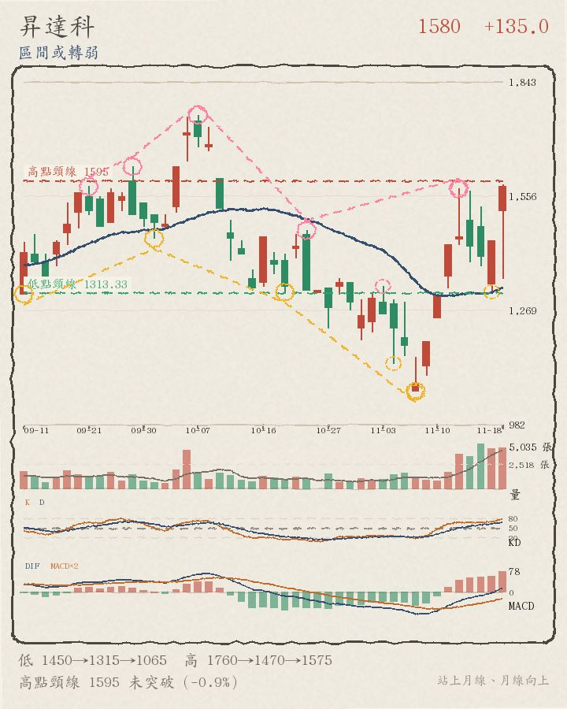
12:31 盤中 1580（+9.34%），比加權指數強 7.93 個百分點、站上月線 1313.75，離高點頸線 1595 還差 0.9%，轉折還沒走出明顯方向。
- 月線位置：現價 1580 在月線 1313.75 之上（+20.3%）；5 日線 1434 也在月線之上（短均在上）；月線向上
- 量能：以已過交易時間推估，今天成交量約是 20 日均量的 3.57 倍（爆量），比 20 日均量大不少；上漲又量增，量價配合
- 關鍵價位：高點頸線 1595 還沒突破，差 0.9%；前一交易日高點 1445（高於 9.3%）；今天盤中高點 1585（低於 0.3%）；今天盤中低點 1350（高於 17.0%）
- 轉折結構：低點 1450、1315、1065 與高點 1760、1470、1575 都沒有明顯遞增，屬於區間震盪或轉弱；還沒確認的轉折低點 11-06 1065、11-17 1315；還沒確認的轉折高點 11-03 1330、11-12 1575（圖上虛線小圈）
聯電 2303 上市
94 +1.6（+1.73%）
區間或轉弱 盤中成交值 71.06 億・全榜第 31 名（上市第 25 名）・相對大盤 +0.32
好條件 0/7：無
不好條件 2/7：在月線之下、月線下彎
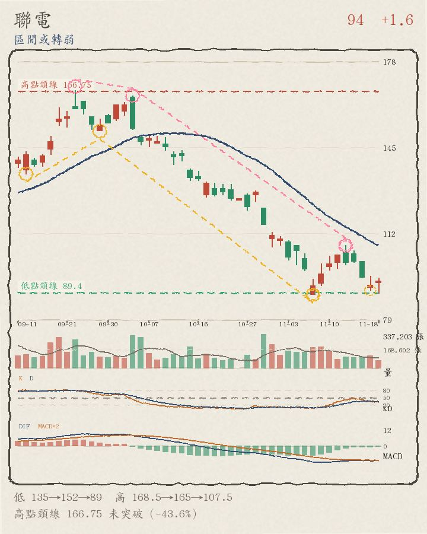
12:31 盤中 94（+1.73%），比加權指數強 0.32 個百分點、跌破月線 109.185，離高點頸線 166.75 還差 43.6%，轉折還沒走出明顯方向。
- 月線位置：現價 94 在月線 109.185 之下（-13.9%）；5 日線 98.82 也在月線之下（短均在下）；月線向下
- 量能：以已過交易時間推估，今天成交量約是 20 日均量的 0.66 倍（量縮），比 20 日均量少很多；上漲但量縮，量價背離
- 關鍵價位：高點頸線 166.75 還沒突破，差 43.6%；前一交易日高點 95.8（低於 1.9%）；今天盤中高點 95.1（低於 1.2%）；今天盤中低點 89.2（高於 5.4%）
- 轉折結構：低點 135、151.5、88.6 與高點 168.5、165、107.5 都沒有明顯遞增，屬於區間震盪或轉弱；還沒確認的轉折低點 11-06 88.6、11-17 90.2；還沒確認的轉折高點 11-12 107.5（圖上虛線小圈）
量縮
↑ 回上方清單
玉晶光 3406 上市
845 +25.0（+3.05%）
區間或轉弱 盤中成交值 69.48 億・全榜第 32 名（上市第 26 名）・相對大盤 +1.64
好條件 1/7：攻擊量（量增＋上漲）
不好條件 2/7：在月線之下、月線下彎
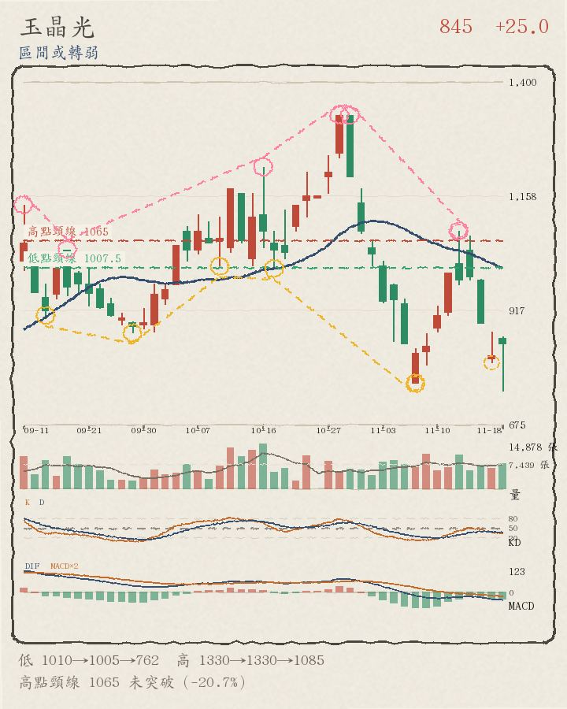
12:31 盤中 845（+3.05%），比加權指數強 1.64 個百分點、跌破月線 1016.15，離高點頸線 1065 還差 20.7%，轉折還沒走出明顯方向。
- 月線位置：現價 845 在月線 1016.15 之下（-16.8%）；5 日線 934.2 也在月線之下（短均在下）；月線向下
- 量能：以已過交易時間推估，今天成交量約是 20 日均量的 1.44 倍（量增），比 20 日均量大不少；上漲又量增，量價配合
- 關鍵價位：高點頸線 1065 還沒突破，差 20.7%；前一交易日高點 871（低於 3.0%）；今天盤中高點 860（低於 1.7%）；今天盤中低點 745（高於 13.4%）
- 轉折結構：低點 1010、1005、762 與高點 1330、1330、1085 都沒有明顯遞增，屬於區間震盪或轉弱；還沒確認的轉折低點 11-06 762、11-17 806；還沒確認的轉折高點 11-12 1085（圖上虛線小圈）
量增
↑ 回上方清單
大量 3167 上市
654 -14.0（-2.10%）
區間或轉弱 盤中成交值 69.1 億・全榜第 33 名（上市第 27 名）・相對大盤 -3.51
好條件 0/7：無
不好條件 6/7：跌破前低、今日下跌、相對大盤弱、在月線之下、跌破昨日低點、月線下彎
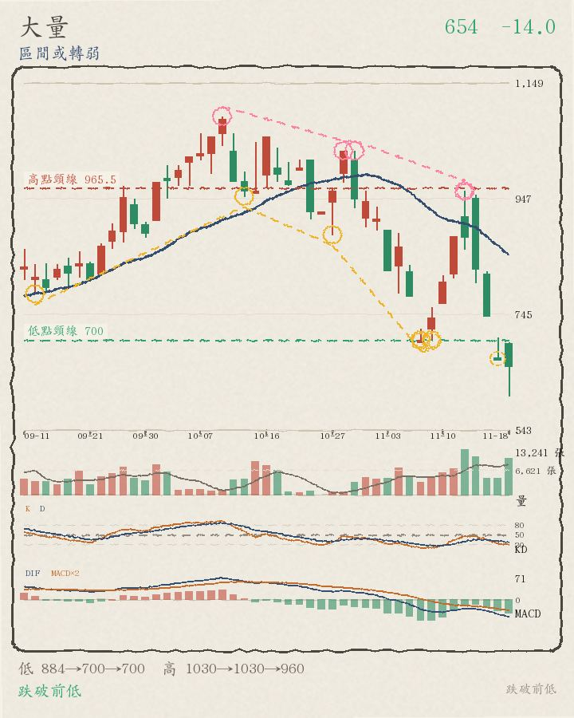
12:31 盤中 654（-2.10%），比加權指數弱 3.51 個百分點、跌破月線 865.2，離高點頸線 965.5 還差 32.3%，轉折還沒走出明顯方向。
- 月線位置：現價 654 在月線 865.2 之下（-24.4%）；5 日線 798.8 也在月線之下（短均在下）；月線向下
- 量能：以已過交易時間推估，今天成交量約是 20 日均量的 2.73 倍（爆量），比 20 日均量大不少；下跌卻量增，量價背離
- 關鍵價位：已跌破前一個轉折低點；高點頸線 965.5 還在現價上方 32.3%；前一交易日高點 704（低於 7.1%）；今天盤中高點 696（低於 6.0%）；今天盤中低點 602（高於 8.6%）
- 轉折結構：低點 884、700、700 與高點 1030、1030、960 都沒有明顯遞增，屬於區間震盪或轉弱；還沒確認的轉折低點 11-09 700、11-17 668；還沒確認的轉折高點 11-12 960（圖上虛線小圈）
旺矽 6223 上櫃
4390 +395.0（+9.89%）
區間或轉弱 盤中成交值 68.92 億・全榜第 34 名（上櫃第 7 名）・相對大盤 +8.48
好條件 1/7：攻擊量（量增＋上漲）
不好條件 2/7：在月線之下、月線下彎
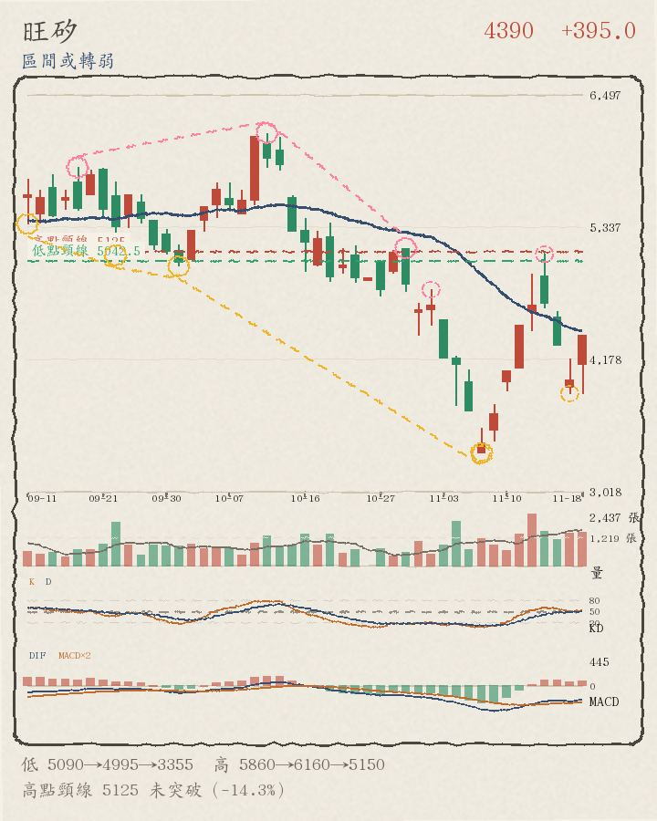
12:31 盤中 4390（+9.89%），比加權指數強 8.48 個百分點、跌破月線 4453.75，離高點頸線 5125 還差 14.3%，轉折還沒走出明顯方向。
- 月線位置：現價 4390 在月線 4453.75 之下（-1.4%）；5 日線 4421 也在月線之下（短均在下）；月線向下
- 量能：以已過交易時間推估，今天成交量約是 20 日均量的 1.84 倍（爆量），比 20 日均量大不少；上漲又量增，量價配合
- 關鍵價位：高點頸線 5125 還沒突破，差 14.3%；前一交易日高點 4185（高於 4.9%）；今天盤中高點 4390（高於 0.0%）；今天盤中低點 3880（高於 13.1%）
- 轉折結構：低點 5090、4995、3355 與高點 5860、6160、5150 都沒有明顯遞增，屬於區間震盪或轉弱；還沒確認的轉折低點 11-06 3355、11-17 3880；還沒確認的轉折高點 11-02 4790、11-13 5100（圖上虛線小圈）
貿聯-KY 3665 上市
1550 +140.0（+9.93%）
區間或轉弱 盤中成交值 66.81 億・全榜第 35 名（上市第 28 名）・相對大盤 +8.52
好條件 1/7：攻擊量（量增＋上漲）
不好條件 2/7：在月線之下、月線下彎
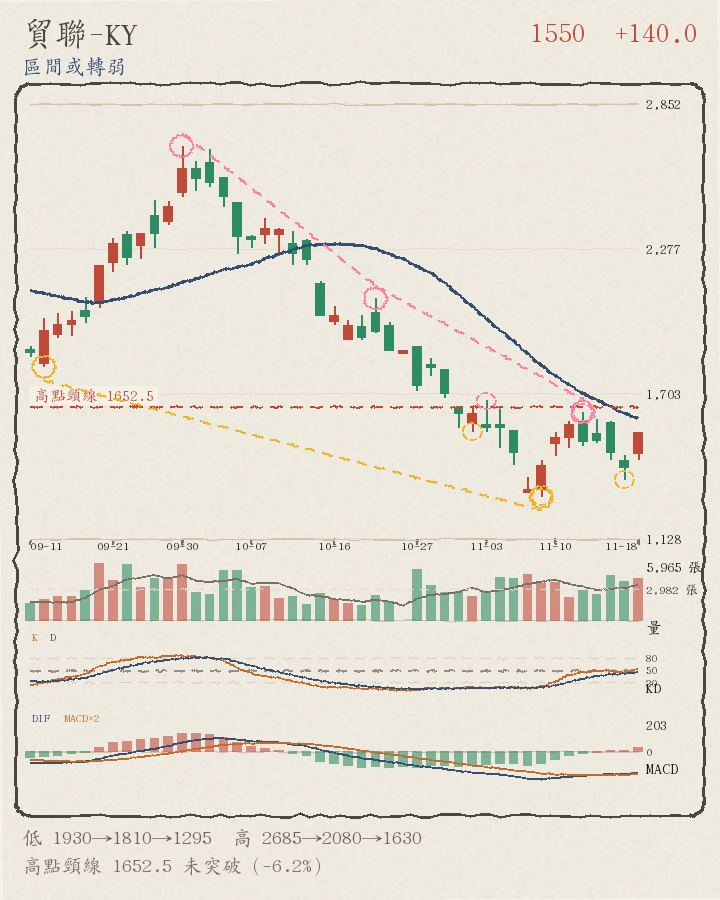
12:31 盤中 1550（+9.93%），比加權指數強 8.52 個百分點、跌破月線 1625.5，離高點頸線 1652.5 還差 6.2%，轉折還沒走出明顯方向。
- 月線位置：現價 1550 在月線 1625.5 之下（-4.6%）；5 日線 1499 也在月線之下（短均在下）；月線向下
- 量能：以已過交易時間推估，今天成交量約是 20 日均量的 1.69 倍（爆量），比 20 日均量大不少；上漲又量增，量價配合
- 關鍵價位：高點頸線 1652.5 還沒突破，差 6.2%；前一交易日高點 1460（高於 6.2%）；今天盤中高點 1550（高於 0.0%）；今天盤中低點 1445（高於 7.3%）
- 轉折結構：低點 1930、1810、1295 與高點 2685、2080、1630 都沒有明顯遞增，屬於區間震盪或轉弱；還沒確認的轉折低點 11-09 1295、11-17 1365；還沒確認的轉折高點 11-03 1675、11-12 1630（圖上虛線小圈）
金居 8358 上櫃
313 -6.5（-2.03%）
區間或轉弱 盤中成交值 66.5 億・全榜第 36 名（上櫃第 8 名）・相對大盤 -3.44
好條件 0/7：無
不好條件 4/7：今日下跌、相對大盤弱、在月線之下、月線下彎
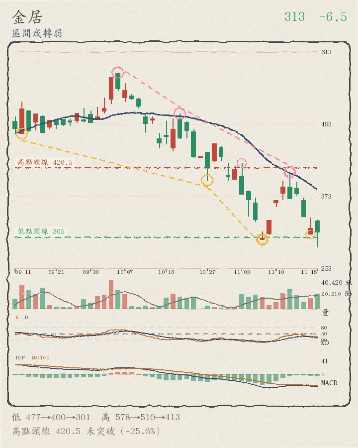
12:31 盤中 313（-2.03%），比加權指數弱 3.44 個百分點、跌破月線 392.025，離高點頸線 420.5 還差 25.6%，轉折還沒走出明顯方向。
- 月線位置：現價 313 在月線 392.025 之下（-20.2%）；5 日線 358.4 也在月線之下（短均在下）；月線向下
- 量能：以已過交易時間推估，今天成交量約是 20 日均量的 2.10 倍（爆量），比 20 日均量大不少；下跌卻量增，量價背離
- 關鍵價位：高點頸線 420.5 還沒突破，差 25.6%；前一交易日高點 337（低於 7.1%）；今天盤中高點 334（低於 6.3%）；今天盤中低點 288（高於 8.7%）
- 轉折結構：低點 477、399.5、301 與高點 578、510、413 都沒有明顯遞增，屬於區間震盪或轉弱；還沒確認的轉折低點 11-06 301、11-17 309；還沒確認的轉折高點 11-03 428、11-12 413（圖上虛線小圈）
鴻海 2317 上市
220.5 +1.5（+0.68%）
區間或轉弱 盤中成交值 64.34 億・全榜第 37 名（上市第 29 名）・相對大盤 -0.73
好條件 0/7：無
不好條件 3/7：相對大盤弱、在月線之下、月線下彎

12:31 盤中 220.5（+0.68%），比加權指數弱 0.73 個百分點、跌破月線 240.55，離高點頸線 255.3 還差 13.6%，轉折還沒走出明顯方向。
- 月線位置：現價 220.5 在月線 240.55 之下（-8.3%）；5 日線 232.1 也在月線之下（短均在下）；月線向下
- 量能：以已過交易時間推估，今天成交量約是 20 日均量的 0.85 倍（量平），比 20 日均量少一些；上漲但量縮，量價背離
- 關鍵價位：高點頸線 255.3 還沒突破，差 13.6%；前一交易日高點 227.5（低於 3.1%）；今天盤中高點 224.5（低於 1.8%）；今天盤中低點 215（高於 2.6%）
- 轉折結構：低點 247、237、212.5 與高點 266.5、253.5、247.5 都沒有明顯遞增，屬於區間震盪或轉弱；還沒確認的轉折低點 11-11 236、11-17 215；還沒確認的轉折高點 11-10 247.5、11-12 245（圖上虛線小圈）
量平
↑ 回上方清單
信驊 5274 上櫃
9880 +5.0（+0.05%）
區間或轉弱 盤中成交值 58.88 億・全榜第 38 名（上櫃第 9 名）・相對大盤 -1.36
好條件 2/7：攻擊量（量增＋上漲）、守住今日高檔（距今日高點 1% 內）
不好條件 4/7：跌破前低、相對大盤弱、在月線之下、月線下彎
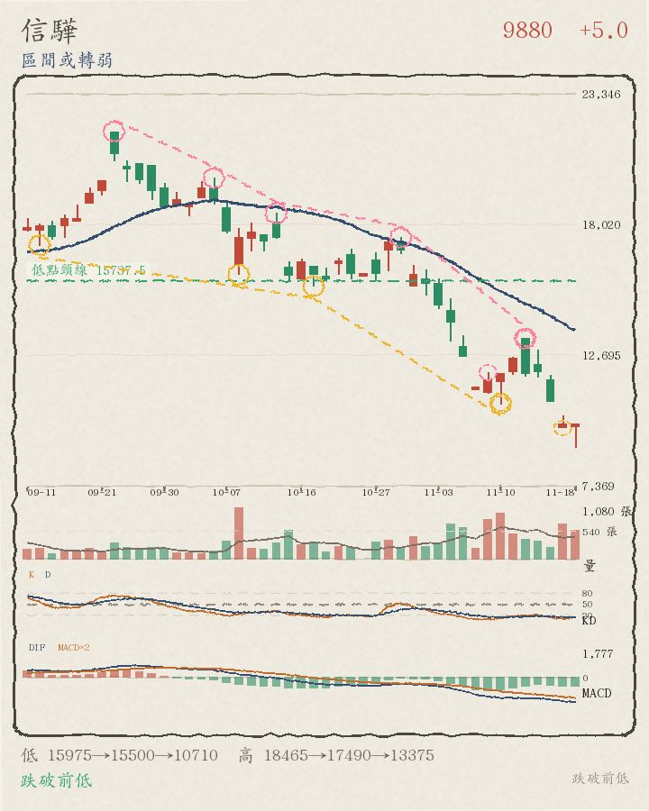
12:31 盤中 9880（+0.05%），比加權指數弱 1.36 個百分點、跌破月線 13995.8，轉折還沒走出明顯方向。
- 月線位置：現價 9880 在月線 13995.8 之下（-29.4%）；5 日線 11437 也在月線之下（短均在下）；月線向下
- 量能：以已過交易時間推估，今天成交量約是 20 日均量的 1.83 倍（爆量），比 20 日均量大不少；上漲又量增，量價配合
- 關鍵價位：前一交易日高點 10220（低於 3.3%）；今天盤中高點 9900（低於 0.2%）；今天盤中低點 8915（高於 10.8%）
- 轉折結構：低點 15975、15500、10710 與高點 18465、17490、13375 都沒有明顯遞增，屬於區間震盪或轉弱；還沒確認的轉折低點 11-10 10710、11-17 9720；還沒確認的轉折高點 11-09 11990、11-12 13375（圖上虛線小圈）
禾伸堂 3026 上市
405 -10.0（-2.41%）
區間或轉弱 盤中成交值 56.94 億・全榜第 39 名（上市第 30 名）・相對大盤 -3.82
好條件 0/7：無
不好條件 6/7：跌破前低、今日下跌、相對大盤弱、在月線之下、跌破昨日低點、月線下彎
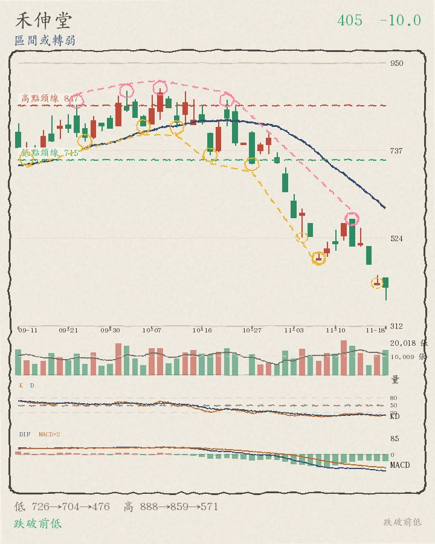
12:31 盤中 405（-2.41%），比加權指數弱 3.82 個百分點、跌破月線 615.775，離高點頸線 847 還差 52.2%，轉折還沒走出明顯方向。
- 月線位置：現價 405 在月線 615.775 之下（-34.2%）；5 日線 490.8 也在月線之下（短均在下）；月線向下
- 量能：以已過交易時間推估，今天成交量約是 20 日均量的 1.57 倍（爆量），比 20 日均量大不少；下跌卻量增，量價背離
- 關鍵價位：已跌破前一個轉折低點；高點頸線 847 還在現價上方 52.2%；前一交易日高點 434（低於 6.7%）；今天盤中高點 428（低於 5.4%）；今天盤中低點 373.5（高於 8.4%）
- 轉折結構：低點 726、704、475.5 與高點 888、859、571 都沒有明顯遞增，屬於區間震盪或轉弱；還沒確認的轉折低點 11-06 475.5、11-17 415；還沒確認的轉折高點 11-12 571（圖上虛線小圈）
致茂 2360 上市
1180 +45.0（+3.96%）
區間或轉弱 盤中成交值 56.83 億・全榜第 40 名（上市第 31 名）・相對大盤 +2.55
好條件 1/7：攻擊量（量增＋上漲）
不好條件 3/7：跌破前低、在月線之下、月線下彎
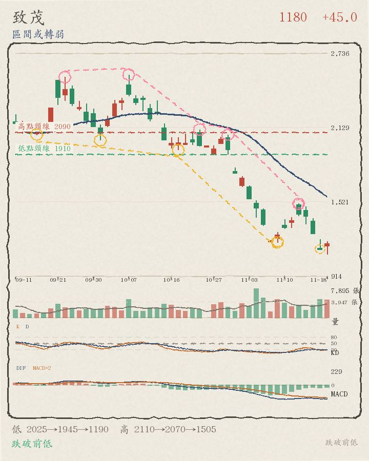
12:31 盤中 1180（+3.96%），比加權指數強 2.55 個百分點、跌破月線 1603.75，離高點頸線 2090 還差 43.5%，轉折還沒走出明顯方向。
- 月線位置：現價 1180 在月線 1603.75 之下（-26.4%）；5 日線 1317 也在月線之下（短均在下）；月線向下
- 量能：以已過交易時間推估，今天成交量約是 20 日均量的 1.86 倍（爆量），比 20 日均量大不少；上漲又量增，量價配合
- 關鍵價位：已跌破前一個轉折低點；高點頸線 2090 還在現價上方 43.5%；前一交易日高點 1215（低於 2.9%）；今天盤中高點 1195（低於 1.3%）；今天盤中低點 1090（高於 8.3%）
- 轉折結構：低點 2025、1945、1190 與高點 2110、2070、1505 都沒有明顯遞增，屬於區間震盪或轉弱；還沒確認的轉折低點 11-09 1190、11-17 1135；還沒確認的轉折高點 11-12 1505（圖上虛線小圈）
群聯 8299 上櫃
1550 +15.0（+0.98%）
區間或轉弱 盤中成交值 54.19 億・全榜第 41 名（上櫃第 10 名）・相對大盤 -0.43
好條件 1/7：攻擊量（量增＋上漲）
不好條件 3/7：相對大盤弱、在月線之下、月線下彎
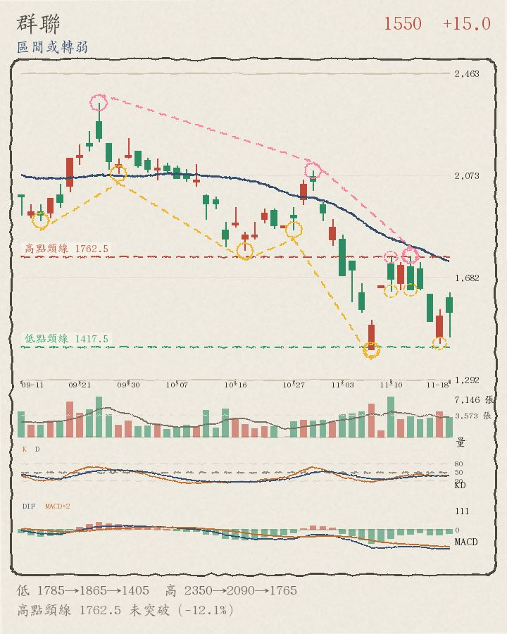
12:31 盤中 1550（+0.98%），比加權指數弱 0.43 個百分點、跌破月線 1759，離高點頸線 1762.5 還差 12.1%，轉折還沒走出明顯方向。
- 月線位置：現價 1550 在月線 1759 之下（-11.9%）；5 日線 1611 也在月線之下（短均在下）；月線向下
- 量能：以已過交易時間推估，今天成交量約是 20 日均量的 1.40 倍（量增），比 20 日均量大不少；上漲又量增，量價配合
- 關鍵價位：高點頸線 1762.5 還沒突破，差 12.1%；前一交易日高點 1560（低於 0.6%）；今天盤中高點 1625（低於 4.6%）；今天盤中低點 1455（高於 6.5%）
- 轉折結構：低點 1785、1865、1405 與高點 2350、2090、1765 都沒有明顯遞增，屬於區間震盪或轉弱；還沒確認的轉折低點 11-12 1635、11-17 1430；還沒確認的轉折高點 11-10 1760、11-12 1765（圖上虛線小圈）
量增
↑ 回上方清單
啟碁 6285 上市
202 +18.0（+9.78%）
區間或轉弱 盤中成交值 52.54 億・全榜第 42 名（上市第 32 名）・相對大盤 +8.37
好條件 1/7：攻擊量（量增＋上漲）
不好條件 2/7：在月線之下、月線下彎
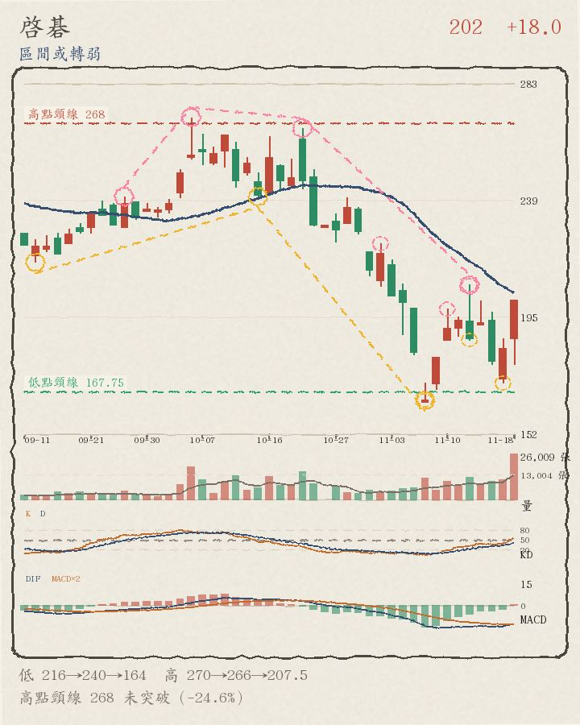
12:31 盤中 202（+9.78%），比加權指數強 8.37 個百分點、跌破月線 207.025，離高點頸線 268 還差 24.6%，轉折還沒走出明顯方向。
- 月線位置：現價 202 在月線 207.025 之下（-2.4%）；5 日線 187.7 也在月線之下（短均在下）；月線向下
- 量能：以已過交易時間推估，今天成交量約是 20 日均量的 4.26 倍（爆量），比 20 日均量大不少；上漲又量增，量價配合
- 關鍵價位：高點頸線 268 還沒突破，差 24.6%；前一交易日高點 187.5（高於 7.7%）；今天盤中高點 202（高於 0.0%）；今天盤中低點 178（高於 13.5%）
- 轉折結構：低點 216、240.5、164.5 與高點 270、266、207.5 都沒有明顯遞增，屬於區間震盪或轉弱；還沒確認的轉折低點 11-12 187、11-17 171；還沒確認的轉折高點 11-10 198.5、11-12 207.5（圖上虛線小圈）
華邦電 2344 上市
109.5 +1.0（+0.92%）
區間或轉弱 盤中成交值 52.27 億・全榜第 43 名（上市第 33 名）・相對大盤 -0.49
好條件 0/7：無
不好條件 4/7：跌破前低、相對大盤弱、在月線之下、月線下彎
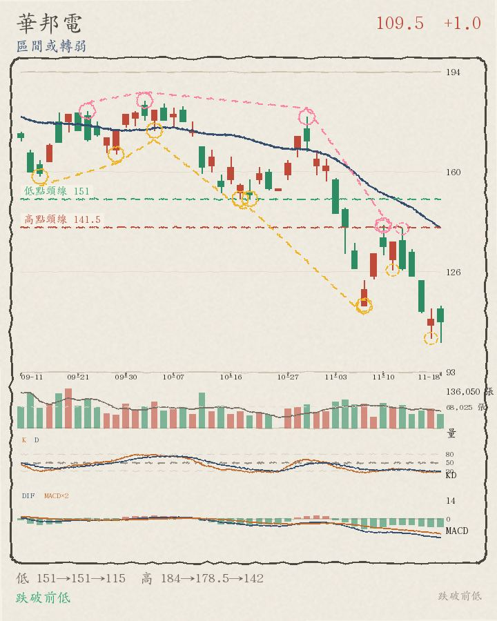
12:31 盤中 109.5（+0.92%），比加權指數弱 0.49 個百分點、跌破月線 143.425，離高點頸線 141.5 還差 22.6%，轉折還沒走出明顯方向。
- 月線位置：現價 109.5 在月線 143.425 之下（-23.6%）；5 日線 122.5 也在月線之下（短均在下）；月線向下
- 量能：以已過交易時間推估，今天成交量約是 20 日均量的 0.94 倍（量平），比 20 日均量少一些
- 關鍵價位：已跌破前一個轉折低點；高點頸線 141.5 還在現價上方 22.6%；前一交易日高點 114（低於 3.9%）；今天盤中高點 115（低於 4.8%）；今天盤中低點 102.5（高於 6.8%）
- 轉折結構：低點 151、151、115 與高點 184、178.5、142 都沒有明顯遞增，屬於區間震盪或轉弱；還沒確認的轉折低點 11-11 127、11-17 104；還沒確認的轉折高點 11-10 142、11-12 141（圖上虛線小圈）
群創 3481 上市
36.95 +1.6（+4.67%）
區間或轉弱 盤中成交值 52.03 億・全榜第 44 名（上市第 34 名）・相對大盤 +3.26
好條件 2/7：攻擊量（量增＋上漲）、守住今日高檔（距今日高點 1% 內）
不好條件 2/7：在月線之下、月線下彎
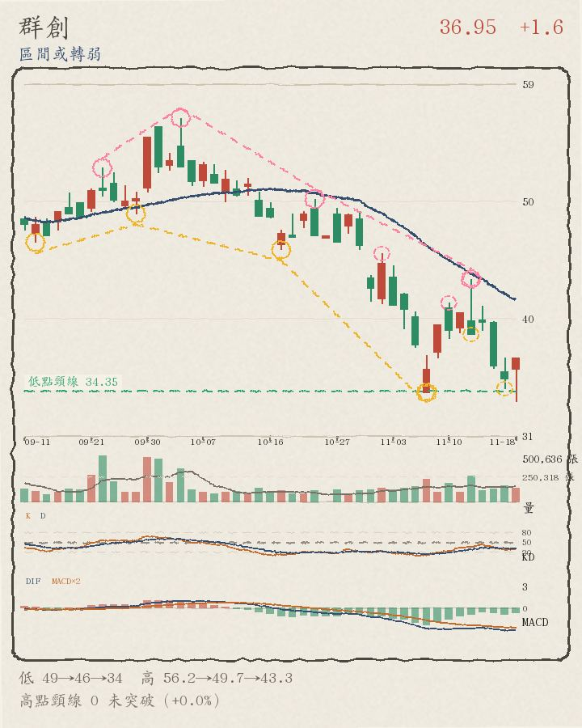
12:31 盤中 36.95（+4.67%），比加權指數強 3.26 個百分點、跌破月線 42.13，轉折還沒走出明顯方向。
- 月線位置：現價 36.95 在月線 42.13 之下（-12.3%）；5 日線 38.2 也在月線之下（短均在下）；月線向下
- 量能：以已過交易時間推估，今天成交量約是 20 日均量的 1.31 倍（量增），比 20 日均量大不少；上漲又量增，量價配合
- 關鍵價位：前一交易日高點 37（低於 0.1%）；今天盤中高點 37（低於 0.1%）；今天盤中低點 33.45（高於 10.5%）
- 轉折結構：低點 48.55、45.65、34.2 與高點 56.2、49.7、43.3 都沒有明顯遞增，屬於區間震盪或轉弱；還沒確認的轉折低點 11-12 38.85、11-17 34.5；還沒確認的轉折高點 11-10 41.4、11-12 43.3（圖上虛線小圈）
量增
↑ 回上方清單
眾達-KY 4977 上市
196.5 +17.0（+9.47%）
區間或轉弱 盤中成交值 51.45 億・全榜第 45 名（上市第 35 名）・相對大盤 +8.06
好條件 4/7：站上月線、突破頸線、攻擊量（量增＋上漲）、守住今日高檔（距今日高點 1% 內）
不好條件 1/7：月線下彎
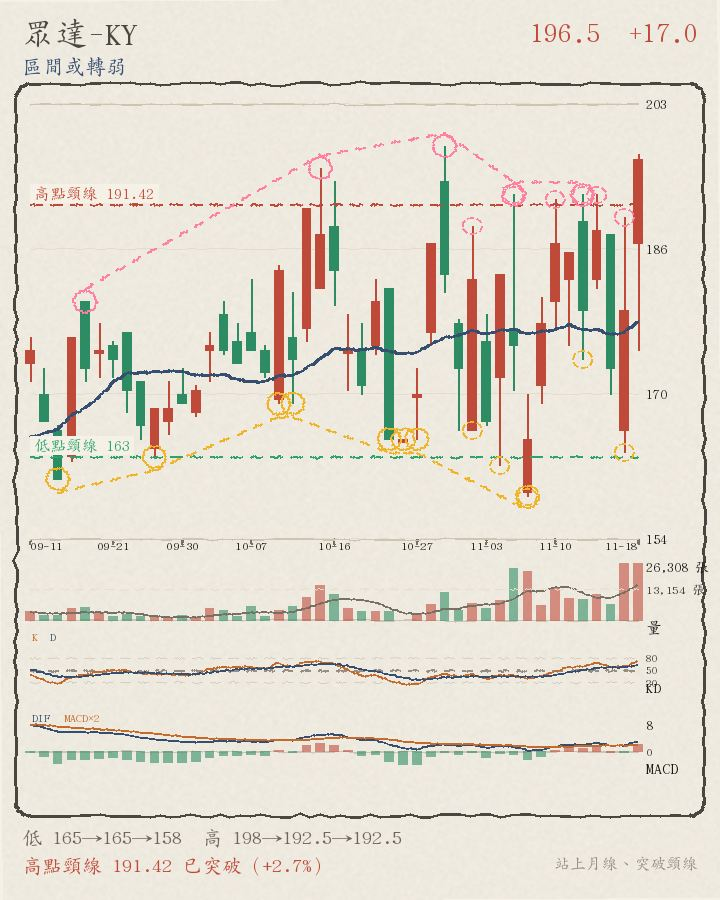
12:31 盤中 196.5（+9.47%），比加權指數強 8.06 個百分點、站上月線 177.025，已突破高點頸線 191.42，轉折還沒走出明顯方向。
- 月線位置：現價 196.5 在月線 177.025 之上（+11.0%）；5 日線 181.3 也在月線之上（短均在上）；月線向下
- 量能：以已過交易時間推估，今天成交量約是 20 日均量的 3.71 倍（爆量），比 20 日均量大不少；上漲又量增，量價配合
- 關鍵價位：高點頸線 191.42 已站上；前一交易日高點 190（高於 3.4%）；今天盤中高點 197（低於 0.3%）；今天盤中低點 175（高於 12.3%）
- 轉折結構：低點 165、165、158.5 與高點 198、192.5、192.5 都沒有明顯遞增，屬於區間震盪或轉弱；還沒確認的轉折低點 11-12 174、11-17 163.5；還沒確認的轉折高點 11-13 192.5、11-17 190（圖上虛線小圈）
友達 2409 上市
27.75 -0.1（-0.18%）
區間或轉弱 盤中成交值 50.77 億・全榜第 46 名（上市第 36 名）・相對大盤 -1.59
好條件 0/7：無
不好條件 4/7：今日下跌、相對大盤弱、在月線之下、月線下彎
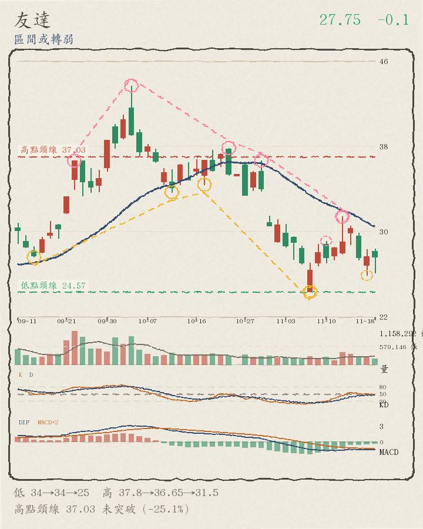
12:31 盤中 27.75（-0.18%），比加權指數弱 1.59 個百分點、跌破月線 30.98，離高點頸線 37.03 還差 25.1%，轉折還沒走出明顯方向。
- 月線位置：現價 27.75 在月線 30.98 之下（-10.4%）；5 日線 28.75 也在月線之下（短均在下）；月線向下
- 量能：以已過交易時間推估，今天成交量約是 20 日均量的 0.87 倍（量平），比 20 日均量少一些
- 關鍵價位：高點頸線 37.03 還沒突破，差 25.1%；前一交易日高點 28.45（低於 2.5%）；今天盤中高點 28.55（低於 2.8%）；今天盤中低點 26.3（高於 5.5%）
- 轉折結構：低點 33.75、34.45、24.55 與高點 37.8、36.65、31.5 都沒有明顯遞增，屬於區間震盪或轉弱；還沒確認的轉折低點 11-06 24.55、11-17 26.1；還沒確認的轉折高點 11-10 29.25、11-12 31.5（圖上虛線小圈）
量平
↑ 回上方清單
華新科 2492 上市
237 +5.0（+2.16%）
區間或轉弱 盤中成交值 47.55 億・全榜第 47 名（上市第 37 名）・相對大盤 +0.75
好條件 0/7：無
不好條件 3/7：跌破前低、在月線之下、月線下彎
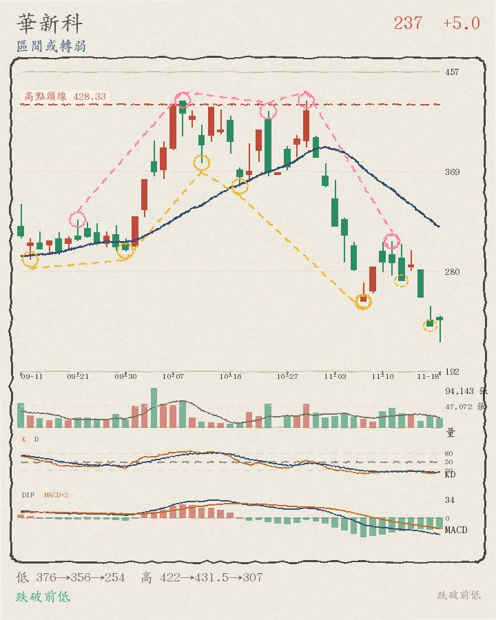
12:31 盤中 237（+2.16%），比加權指數強 0.75 個百分點、跌破月線 326.075，離高點頸線 428.33 還差 44.7%，轉折還沒走出明顯方向。
- 月線位置：現價 237 在月線 326.075 之下（-27.3%）；5 日線 267.1 也在月線之下（短均在下）；月線向下
- 量能：以已過交易時間推估，今天成交量約是 20 日均量的 0.87 倍（量平），比 20 日均量少一些
- 關鍵價位：已跌破前一個轉折低點；高點頸線 428.33 還在現價上方 44.7%；前一交易日高點 249.5（低於 5.0%）；今天盤中高點 241（低於 1.7%）；今天盤中低點 217.5（高於 9.0%）
- 轉折結構：低點 376.5、355.5、253.5 與高點 422、431.5、307 都沒有明顯遞增，屬於區間震盪或轉弱；還沒確認的轉折低點 11-12 272、11-17 232；還沒確認的轉折高點 11-11 307（圖上虛線小圈）
雙鴻 3324 上櫃
991 +64.0（+6.90%）
區間或轉弱 盤中成交值 44.21 億・全榜第 48 名（上櫃第 11 名）・相對大盤 +5.49
好條件 2/7：攻擊量（量增＋上漲）、守住今日高檔（距今日高點 1% 內）
不好條件 3/7：跌破前低、在月線之下、月線下彎
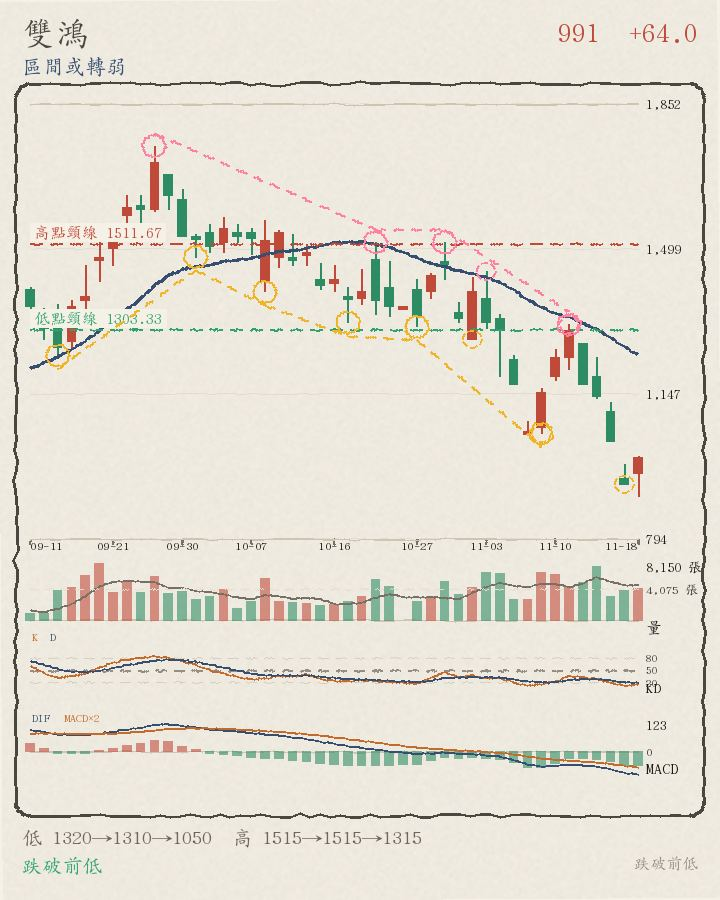
12:31 盤中 991（+6.90%），比加權指數強 5.49 個百分點、跌破月線 1262.35，離高點頸線 1511.67 還差 34.4%，轉折還沒走出明顯方向。
- 月線位置：現價 991 在月線 1262.35 之下（-21.5%）；5 日線 1113.4 也在月線之下（短均在下）；月線向下
- 量能：以已過交易時間推估，今天成交量約是 20 日均量的 1.20 倍（量增），比 20 日均量大不少；上漲又量增，量價配合
- 關鍵價位：已跌破前一個轉折低點；高點頸線 1511.67 還在現價上方 34.4%；前一交易日高點 975（高於 1.6%）；今天盤中高點 995（低於 0.4%）；今天盤中低點 896（高於 10.6%）
- 轉折結構：低點 1320、1310、1050 與高點 1515、1515、1315 都沒有明顯遞增，屬於區間震盪或轉弱；還沒確認的轉折低點 11-09 1050、11-17 927；還沒確認的轉折高點 11-03 1445、11-11 1315（圖上虛線小圈）
環球晶 6488 上櫃
557 +11.0（+2.01%）
區間或轉弱 盤中成交值 42.19 億・全榜第 49 名（上櫃第 12 名）・相對大盤 +0.60
好條件 0/7：無
不好條件 2/7：在月線之下、月線下彎
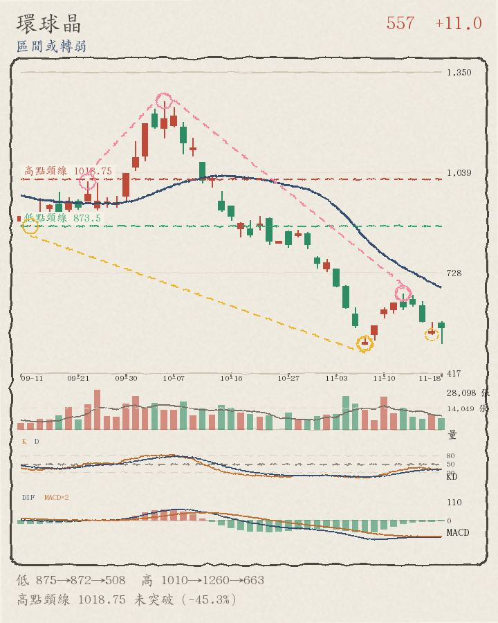
12:31 盤中 557（+2.01%），比加權指數強 0.60 個百分點、跌破月線 696.7，離高點頸線 1018.75 還差 45.3%，轉折還沒走出明顯方向。
- 月線位置：現價 557 在月線 696.7 之下（-20.1%）；5 日線 602 也在月線之下（短均在下）；月線向下
- 量能：以已過交易時間推估，今天成交量約是 20 日均量的 0.83 倍（量平），比 20 日均量少很多；上漲但量縮，量價背離
- 關鍵價位：高點頸線 1018.75 還沒突破，差 45.3%；前一交易日高點 575（低於 3.1%）；今天盤中高點 577（低於 3.5%）；今天盤中低點 507（高於 9.9%）
- 轉折結構：低點 875、872、508 與高點 1010、1260、663 都沒有明顯遞增，屬於區間震盪或轉弱；還沒確認的轉折低點 11-06 508、11-17 535；還沒確認的轉折高點 11-12 663（圖上虛線小圈）
量平
↑ 回上方清單
緯創 3231 上市
162.5 +5.5（+3.50%）
區間或轉弱 盤中成交值 37.36 億・全榜第 50 名（上市第 38 名）・相對大盤 +2.09
好條件 1/7：守住今日高檔（距今日高點 1% 內）
不好條件 2/7：在月線之下、月線下彎
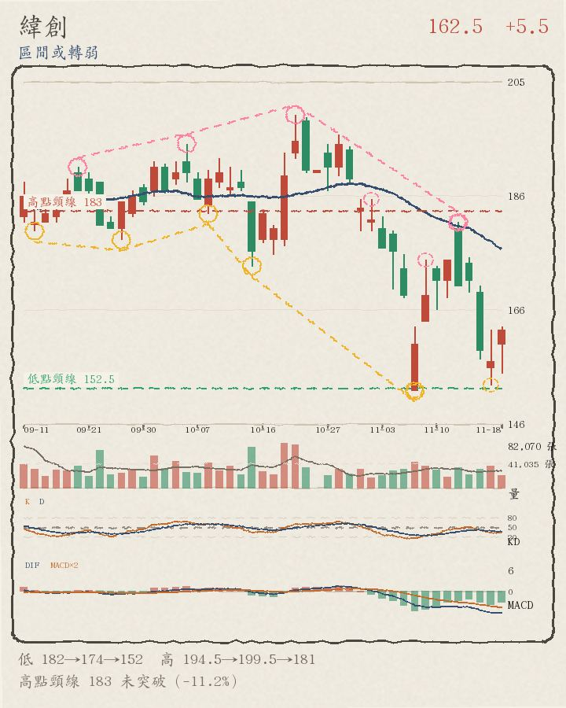
12:31 盤中 162.5（+3.50%），比加權指數強 2.09 個百分點、跌破月線 177.725，離高點頸線 183 還差 11.2%，轉折還沒走出明顯方向。
- 月線位置：現價 162.5 在月線 177.725 之下（-8.6%）；5 日線 166.3 也在月線之下（短均在下）；月線向下
- 量能：以已過交易時間推估，今天成交量約是 20 日均量的 0.83 倍（量平），比 20 日均量少很多；上漲但量縮，量價背離
- 關鍵價位：高點頸線 183 還沒突破，差 11.2%；前一交易日高點 162.5（高於 0.0%）；今天盤中高點 163（低於 0.3%）；今天盤中低點 155（高於 4.8%）
- 轉折結構：低點 182.5、173.5、152 與高點 194.5、199.5、181 都沒有明顯遞增，屬於區間震盪或轉弱；還沒確認的轉折低點 11-06 152、11-17 153；還沒確認的轉折高點 11-09 174.5、11-12 181（圖上虛線小圈）
量平
↑ 回上方清單
緯穎 6669 上市
1495 +45.0（+3.10%）
區間或轉弱 盤中成交值 37.35 億・全榜第 51 名（上市第 39 名）・相對大盤 +1.69
好條件 1/7：守住今日高檔（距今日高點 1% 內）
不好條件 2/7：在月線之下、月線下彎
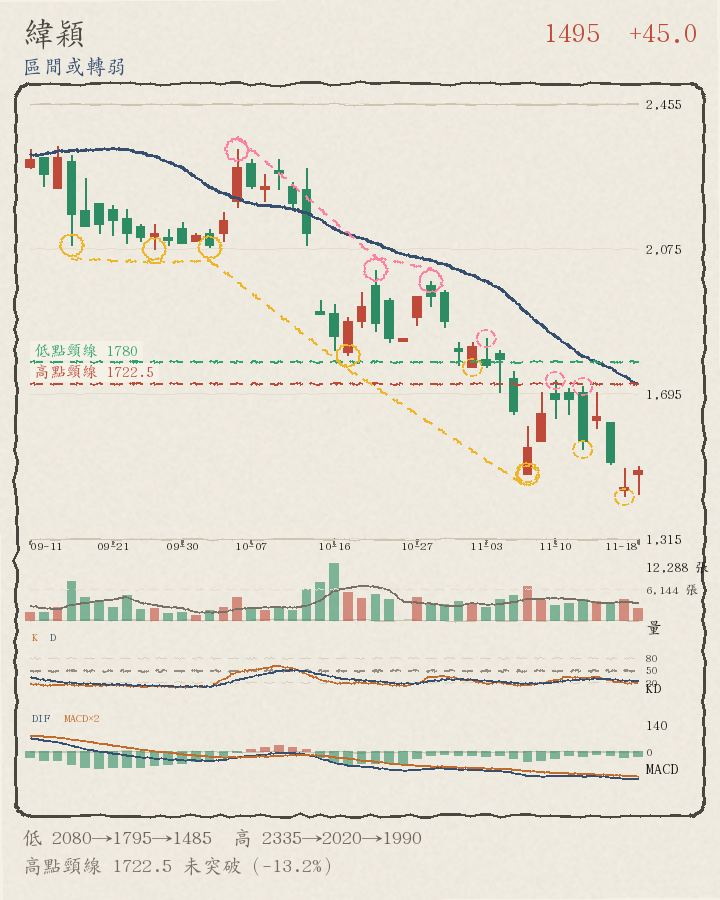
12:31 盤中 1495（+3.10%），比加權指數強 1.69 個百分點、跌破月線 1741.75，離高點頸線 1722.5 還差 13.2%，轉折還沒走出明顯方向。
- 月線位置：現價 1495 在月線 1741.75 之下（-14.2%）；5 日線 1570 也在月線之下（短均在下）；月線向下
- 量能：以已過交易時間推估，今天成交量約是 20 日均量的 0.74 倍（量平），比 20 日均量少很多；上漲但量縮，量價背離
- 關鍵價位：高點頸線 1722.5 還沒突破，差 13.2%；前一交易日高點 1500（低於 0.3%）；今天盤中高點 1505（低於 0.7%）；今天盤中低點 1430（高於 4.5%）
- 轉折結構：低點 2080、1795、1485 與高點 2335、2020、1990 都沒有明顯遞增，屬於區間震盪或轉弱；還沒確認的轉折低點 11-12 1550、11-17 1425；還沒確認的轉折高點 11-10 1730、11-12 1715（圖上虛線小圈）
量平
↑ 回上方清單
力積電 6770 上市
52.3 +0.8（+1.55%）
區間或轉弱 盤中成交值 37.13 億・全榜第 52 名（上市第 40 名）・相對大盤 +0.14
好條件 0/7：無
不好條件 2/7：在月線之下、月線下彎
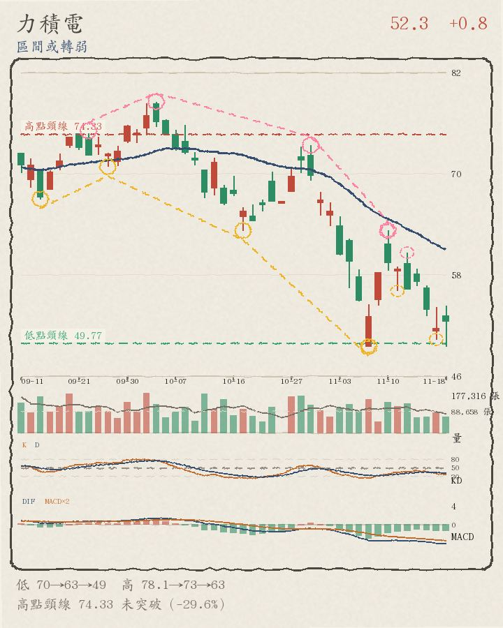
12:31 盤中 52.3（+1.55%），比加權指數強 0.14 個百分點、跌破月線 61.33，離高點頸線 74.33 還差 29.6%，轉折還沒走出明顯方向。
- 月線位置：現價 52.3 在月線 61.33 之下（-14.7%）；5 日線 55.36 也在月線之下（短均在下）；月線向下
- 量能：以已過交易時間推估，今天成交量約是 20 日均量的 0.86 倍（量平），比 20 日均量少一些
- 關鍵價位：高點頸線 74.33 還沒突破，差 29.6%；前一交易日高點 54（低於 3.1%）；今天盤中高點 54.1（低於 3.3%）；今天盤中低點 49.35（高於 6.0%）
- 轉折結構：低點 70.5、63、49.35 與高點 78.1、73、63 都沒有明顯遞增，屬於區間震盪或轉弱；還沒確認的轉折低點 11-11 55.9、11-17 50.2；還沒確認的轉折高點 11-10 63、11-12 60.4（圖上虛線小圈）
量平
↑ 回上方清單
旺宏 2337 上市
71.1 -0.8（-1.11%）
區間或轉弱 盤中成交值 36.4 億・全榜第 53 名（上市第 41 名）・相對大盤 -2.52
好條件 0/7：無
不好條件 5/7：跌破前低、今日下跌、相對大盤弱、在月線之下、月線下彎
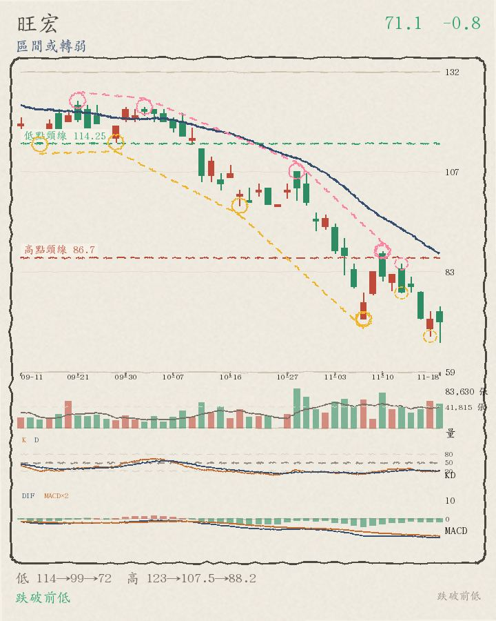
12:31 盤中 71.1（-1.11%），比加權指數弱 2.52 個百分點、跌破月線 89.055，離高點頸線 86.7 還差 18.0%，轉折還沒走出明顯方向。
- 月線位置：現價 71.1 在月線 89.055 之下（-20.2%）；5 日線 76.92 也在月線之下（短均在下）；月線向下
- 量能：以已過交易時間推估，今天成交量約是 20 日均量的 1.51 倍（爆量），比 20 日均量大不少；下跌卻量增，量價背離
- 關鍵價位：已跌破前一個轉折低點；高點頸線 86.7 還在現價上方 18.0%；前一交易日高點 73.7（低於 3.5%）；今天盤中高點 74.8（低於 4.9%）；今天盤中低點 66.1（高於 7.6%）
- 轉折結構：低點 114.5、99.2、71.8 與高點 123、107.5、88.2 都沒有明顯遞增，屬於區間震盪或轉弱；還沒確認的轉折低點 11-12 78.2、11-17 67.7；還沒確認的轉折高點 11-10 88.2、11-12 85.2（圖上虛線小圈）
川湖 2059 上市
6645 +80.0（+1.22%）
區間或轉弱 盤中成交值 35.88 億・全榜第 54 名（上市第 42 名）・相對大盤 -0.19
好條件 0/7：無
不好條件 4/7：跌破前低、相對大盤弱、在月線之下、月線下彎
12:31 盤中 6645（+1.22%），比加權指數弱 0.19 個百分點、跌破月線 8852，離高點頸線 10435 還差 36.3%，轉折還沒走出明顯方向。
- 月線位置：現價 6645 在月線 8852 之下（-24.9%）；5 日線 7693 也在月線之下（短均在下）；月線向下
- 量能：以已過交易時間推估，今天成交量約是 20 日均量的 1.09 倍（量平），比 20 日均量大一些
- 關鍵價位：已跌破前一個轉折低點；高點頸線 10435 還在現價上方 36.3%；前一交易日高點 6875（低於 3.3%）；今天盤中高點 6750（低於 1.6%）；今天盤中低點 6210（高於 7.0%）
- 轉折結構：低點 11700、9500、7200 與高點 10580、10290、9100 都沒有明顯遞增，屬於區間震盪或轉弱；還沒確認的轉折低點 11-06 7200、11-17 6415；還沒確認的轉折高點 11-03 9850、11-12 9100（圖上虛線小圈）
光聖 6442 上市
1065 +96.0（+9.91%）
區間或轉弱 盤中成交值 35.75 億・全榜第 55 名（上市第 43 名）・相對大盤 +8.50
好條件 1/7：攻擊量（量增＋上漲）
不好條件 2/7：在月線之下、月線下彎
12:31 盤中 1065（+9.91%），比加權指數強 8.50 個百分點、跌破月線 1219.45，離高點頸線 1207.5 還差 11.8%，轉折還沒走出明顯方向。
- 月線位置：現價 1065 在月線 1219.45 之下（-12.7%）；5 日線 1088.8 也在月線之下（短均在下）；月線向下
- 量能：以已過交易時間推估，今天成交量約是 20 日均量的 2.35 倍（爆量），比 20 日均量大不少；上漲又量增，量價配合
- 關鍵價位：高點頸線 1207.5 還沒突破，差 11.8%；前一交易日高點 1025（高於 3.9%）；今天盤中高點 1065（高於 0.0%）；今天盤中低點 920（高於 15.8%）
- 轉折結構：低點 1495、1465、963 與高點 1920、1815、1215 都沒有明顯遞增，屬於區間震盪或轉弱；還沒確認的轉折低點 11-12 1095、11-17 941；還沒確認的轉折高點 11-10 1200、11-12 1215（圖上虛線小圈）
中鼎 9933 上市
57.6 +1.0（+1.77%）
高點墊高、底部不穩 盤中成交值 33.12 億・全榜第 56 名（上市第 44 名）・相對大盤 +0.36
好條件 5/7：站上月線、月線向上、頭頭高、突破頸線、攻擊量（量增＋上漲）
不好條件 0/7：無
12:31 盤中 57.6（+1.77%），比加權指數強 0.36 個百分點、站上月線 47.39，已突破高點頸線 48.46，高點還在墊高（但底部沒同步墊高）。
- 月線位置：現價 57.6 在月線 47.39 之上（+21.5%）；5 日線 52.2 也在月線之上（短均在上）；月線向上
- 量能：以已過交易時間推估，今天成交量約是 20 日均量的 8.03 倍（爆量），比 20 日均量大不少；上漲又量增，量價配合
- 關鍵價位：高點頸線 48.46 已站上；前一交易日高點 56.6（高於 1.8%）；今天盤中高點 59.3（低於 2.9%）；今天盤中低點 55.3（高於 4.2%）
- 轉折結構：高點 48.3、48.3、52.6 墊高（頭頭高），但低點 40.35、41.9、41.9 沒有同步墊高；還沒確認的轉折低點 11-06 41.9、11-12 49.05；還沒確認的轉折高點 11-11 52.6、11-17 56.6（圖上虛線小圈）
中信金 2891 上市
73.9 -3.6（-4.65%）
高點墊高、底部不穩 盤中成交值 32.94 億・全榜第 57 名（上市第 45 名）・相對大盤 -6.06
好條件 2/7：月線向上、頭頭高
不好條件 4/7：今日下跌、相對大盤弱、在月線之下、跌破昨日低點
12:31 盤中 73.9（-4.65%），比加權指數弱 6.06 個百分點、跌破月線 74.995，離高點頸線 75.96 還差 2.7%，高點還在墊高（但底部沒同步墊高）。
- 月線位置：現價 73.9 在月線 74.995 之下（-1.5%）；5 日線 76.62 也在月線之上（短均在上）；月線向上
- 量能：以已過交易時間推估，今天成交量約是 20 日均量的 1.30 倍（量增），比 20 日均量大不少；下跌卻量增，量價背離
- 關鍵價位：高點頸線 75.96 還沒突破，差 2.7%；前一交易日高點 79.4（低於 6.9%）；今天盤中高點 77.8（低於 5.0%）；今天盤中低點 73（高於 1.2%）
- 轉折結構：高點 76.9、76.4、76.2 墊高（頭頭高），但低點 67.3、73.8、67.5 沒有同步墊高；還沒確認的轉折低點 11-11 72.6、11-17 75.1；還沒確認的轉折高點 11-09 76.2、11-16 80.6（圖上虛線小圈）
事欣科 4916 上市
111 +10.0（+9.90%）
高點墊高、底部不穩 盤中成交值 32.32 億・全榜第 58 名（上市第 46 名）・相對大盤 +8.49
好條件 5/7：站上月線、月線向上、頭頭高、突破頸線、攻擊量（量增＋上漲）
不好條件 0/7：無
12:31 盤中 111（+9.90%），比加權指數強 8.49 個百分點、站上月線 99.675，已突破高點頸線 106.62，高點還在墊高（但底部沒同步墊高）。
- 月線位置：現價 111 在月線 99.675 之上（+11.4%）；5 日線 104.8 也在月線之上（短均在上）；月線向上
- 量能：以已過交易時間推估，今天成交量約是 20 日均量的 6.03 倍（爆量），比 20 日均量大不少；上漲又量增，量價配合
- 關鍵價位：高點頸線 106.62 已站上；前一交易日高點 107.5（高於 3.3%）；今天盤中高點 111（高於 0.0%）；今天盤中低點 100.5（高於 10.4%）
- 轉折結構：高點 113.5、105、109.5 墊高（頭頭高），但低點 100.5、97、80.3 沒有同步墊高；還沒確認的轉折低點 11-06 80.3、11-17 96.7；還沒確認的轉折高點 11-02 104.5、11-16 121（圖上虛線小圈）
廣達 2382 上市
263 +0.5（+0.19%）
區間或轉弱 盤中成交值 31.37 億・全榜第 59 名（上市第 47 名）・相對大盤 -1.22
好條件 0/7：無
不好條件 4/7：跌破前低、相對大盤弱、在月線之下、月線下彎
12:31 盤中 263（+0.19%），比加權指數弱 1.22 個百分點、跌破月線 304.2，離高點頸線 304 還差 13.5%，轉折還沒走出明顯方向。
- 月線位置：現價 263 在月線 304.2 之下（-13.5%）；5 日線 276 也在月線之下（短均在下）；月線向下
- 量能：以已過交易時間推估，今天成交量約是 20 日均量的 1.02 倍（量平），跟 20 日均量差不多
- 關鍵價位：已跌破前一個轉折低點；高點頸線 304 還在現價上方 13.5%；前一交易日高點 269（低於 2.2%）；今天盤中高點 266.5（低於 1.3%）；今天盤中低點 253（高於 4.0%）
- 轉折結構：低點 311、311、272 與高點 349、337.5、338 都沒有明顯遞增，屬於區間震盪或轉弱；還沒確認的轉折低點 11-06 272、11-17 255；還沒確認的轉折高點 11-09 304、11-10 304（圖上虛線小圈）
矽力*-KY 6415 上市
339.5 -15.5（-4.37%）
高點墊高、底部不穩 盤中成交值 31.2 億・全榜第 60 名（上市第 48 名）・相對大盤 -5.78
好條件 1/7：頭頭高
不好條件 6/7：跌破前低、今日下跌、相對大盤弱、在月線之下、跌破昨日低點、月線下彎
12:31 盤中 339.5（-4.37%），比加權指數弱 5.78 個百分點、跌破月線 455.825，離高點頸線 472.83 還差 28.2%，高點還在墊高（但底部沒同步墊高）。
- 月線位置：現價 339.5 在月線 455.825 之下（-25.5%）；5 日線 418.2 也在月線之下（短均在下）；月線向下
- 量能：以已過交易時間推估，今天成交量約是 20 日均量的 1.80 倍（爆量），比 20 日均量大不少；下跌卻量增，量價背離
- 關鍵價位：已跌破前一個轉折低點；高點頸線 472.83 還在現價上方 28.2%；前一交易日高點 361.5（低於 6.1%）；今天盤中高點 343（低於 1.0%）；今天盤中低點 319.5（高於 6.3%）
- 轉折結構：高點 475、513、551 墊高（頭頭高），但低點 412、456.5、371 沒有同步墊高；還沒確認的轉折低點 11-06 371、11-17 355；還沒確認的轉折高點 11-11 467.5、11-13 476（圖上虛線小圈）
敬鵬 2355 上市
59.8 +3.3（+5.84%）
高點墊高、底部不穩 盤中成交值 30.22 億・全榜第 61 名（上市第 49 名）・相對大盤 +4.43
好條件 5/7：站上月線、月線向上、頭頭高、突破頸線、攻擊量（量增＋上漲）
不好條件 0/7：無
12:31 盤中 59.8（+5.84%），比加權指數強 4.43 個百分點、站上月線 52.938，已突破高點頸線 51.35，高點還在墊高（但底部沒同步墊高）。
- 月線位置：現價 59.8 在月線 52.938 之上（+13.0%）；5 日線 59.72 也在月線之上（短均在上）；月線向上
- 量能：以已過交易時間推估，今天成交量約是 20 日均量的 3.22 倍（爆量），比 20 日均量大不少；上漲又量增，量價配合
- 關鍵價位：高點頸線 51.35 已站上；前一交易日高點 60.2（低於 0.7%）；今天盤中高點 60.6（低於 1.3%）；今天盤中低點 53.1（高於 12.6%）
- 轉折結構：高點 42.25、56、56.3 墊高（頭頭高），但低點 49.8、48.9、43.35 沒有同步墊高；還沒確認的轉折低點 11-06 43.35、11-17 55.7；還沒確認的轉折高點 11-05 50.9、11-13 66.7（圖上虛線小圈）
健鼎 3044 上市
481.5 +43.5（+9.93%）
高點墊高、底部不穩 盤中成交值 28.74 億・全榜第 62 名（上市第 50 名）・相對大盤 +8.52
好條件 2/7：頭頭高、攻擊量（量增＋上漲）
不好條件 2/7：在月線之下、月線下彎
12:31 盤中 481.5（+9.93%），比加權指數強 8.52 個百分點、跌破月線 507.475，離高點頸線 594.33 還差 19.0%，高點還在墊高（但底部沒同步墊高）。
- 月線位置：現價 481.5 在月線 507.475 之下（-5.1%）；5 日線 501 也在月線之下（短均在下）；月線向下
- 量能：以已過交易時間推估，今天成交量約是 20 日均量的 1.89 倍（爆量），比 20 日均量大不少；上漲又量增，量價配合
- 關鍵價位：高點頸線 594.33 還沒突破，差 19.0%；前一交易日高點 469（高於 2.7%）；今天盤中高點 481.5（高於 0.0%）；今天盤中低點 430（高於 12.0%）
- 轉折結構：高點 604、597、563 墊高（頭頭高），但低點 554、554、395 沒有同步墊高；還沒確認的轉折低點 11-06 395、11-17 436.5；還沒確認的轉折高點 11-02 539、11-13 582（圖上虛線小圈）
頎邦 6147 上櫃
146 +4.5（+3.18%）
區間或轉弱 盤中成交值 27.82 億・全榜第 63 名（上櫃第 13 名）・相對大盤 +1.77
好條件 1/7：攻擊量（量增＋上漲）
不好條件 2/7：在月線之下、月線下彎
12:31 盤中 146（+3.18%），比加權指數強 1.77 個百分點、跌破月線 181.1，離高點頸線 220 還差 33.6%，轉折還沒走出明顯方向。
- 月線位置：現價 146 在月線 181.1 之下（-19.4%）；5 日線 161.5 也在月線之下（短均在下）；月線向下
- 量能：以已過交易時間推估，今天成交量約是 20 日均量的 1.12 倍（量增），比 20 日均量大一些；上漲又量增，量價配合
- 關鍵價位：高點頸線 220 還沒突破，差 33.6%；前一交易日高點 152（低於 3.9%）；今天盤中高點 149（低於 2.0%）；今天盤中低點 132（高於 10.6%）
- 轉折結構：低點 211、194.5、142 與高點 217、223、180 都沒有明顯遞增，屬於區間震盪或轉弱；還沒確認的轉折低點 11-06 142、11-17 139.5；還沒確認的轉折高點 11-12 180（圖上虛線小圈）
量增
↑ 回上方清單
華星光 4979 上櫃
338 +19.5（+6.12%）
區間或轉弱 盤中成交值 25.54 億・全榜第 64 名（上櫃第 14 名）・相對大盤 +4.71
好條件 2/7：攻擊量（量增＋上漲）、守住今日高檔（距今日高點 1% 內）
不好條件 2/7：在月線之下、月線下彎
12:31 盤中 338（+6.12%），比加權指數強 4.71 個百分點、跌破月線 406.425，離高點頸線 654 還差 48.3%，轉折還沒走出明顯方向。
- 月線位置：現價 338 在月線 406.425 之下（-16.8%）；5 日線 362 也在月線之下（短均在下）；月線向下
- 量能：以已過交易時間推估，今天成交量約是 20 日均量的 1.97 倍（爆量），比 20 日均量大不少；上漲又量增，量價配合
- 關鍵價位：高點頸線 654 還沒突破，差 48.3%；前一交易日高點 337.5（高於 0.1%）；今天盤中高點 340.5（低於 0.7%）；今天盤中低點 300.5（高於 12.5%）
- 轉折結構：低點 545、445、312 與高點 588、531、410.5 都沒有明顯遞增，屬於區間震盪或轉弱；還沒確認的轉折低點 11-06 312、11-17 312.5；還沒確認的轉折高點 11-12 410.5（圖上虛線小圈）
萬潤 6187 上櫃
790 +17.0（+2.20%）
區間或轉弱 盤中成交值 25.27 億・全榜第 65 名（上櫃第 15 名）・相對大盤 +0.79
好條件 1/7：攻擊量（量增＋上漲）
不好條件 3/7：跌破前低、在月線之下、月線下彎
12:31 盤中 790（+2.20%），比加權指數強 0.79 個百分點、跌破月線 1096.85，轉折還沒走出明顯方向。
- 月線位置：現價 790 在月線 1096.85 之下（-28.0%）；5 日線 909.8 也在月線之下（短均在下）；月線向下
- 量能：以已過交易時間推估，今天成交量約是 20 日均量的 1.97 倍（爆量），比 20 日均量大不少；上漲又量增，量價配合
- 關鍵價位：前一交易日高點 831（低於 4.9%）；今天盤中高點 800（低於 1.2%）；今天盤中低點 707（高於 11.7%）
- 轉折結構：低點 1180、1180、864 與高點 1680、1360、1060 都沒有明顯遞增，屬於區間震盪或轉弱；還沒確認的轉折低點 11-06 864、11-17 773；還沒確認的轉折高點 11-02 1210、11-12 1060（圖上虛線小圈）
精測 6510 上櫃
2955 +225.0（+8.24%）
高點墊高、底部不穩 盤中成交值 22.72 億・全榜第 66 名（上櫃第 16 名）・相對大盤 +6.83
好條件 4/7：站上月線、頭頭高、攻擊量（量增＋上漲）、守住今日高檔（距今日高點 1% 內）
不好條件 1/7：月線下彎
12:31 盤中 2955（+8.24%），比加權指數強 6.83 個百分點、站上月線 2897.75，離高點頸線 3542.5 還差 16.6%，高點還在墊高（但底部沒同步墊高）。
- 月線位置：現價 2955 在月線 2897.75 之上（+2.0%）；5 日線 3065 也在月線之上（短均在上）；月線向下
- 量能：以已過交易時間推估，今天成交量約是 20 日均量的 1.20 倍（量增），比 20 日均量大不少；上漲又量增，量價配合
- 關鍵價位：高點頸線 3542.5 還沒突破，差 16.6%；前一交易日高點 2880（高於 2.6%）；今天盤中高點 2970（低於 0.5%）；今天盤中低點 2625（高於 12.6%）
- 轉折結構：高點 3775、3580、3345 墊高（頭頭高），但低點 3000、2825、2250 沒有同步墊高；還沒確認的轉折低點 11-06 2250、11-17 2705；還沒確認的轉折高點 11-02 2980、11-13 3505（圖上虛線小圈）
力旺 3529 上櫃
2280 +100.0（+4.59%）
區間或轉弱 盤中成交值 21.32 億・全榜第 67 名（上櫃第 17 名）・相對大盤 +3.18
好條件 1/7：攻擊量（量增＋上漲）
不好條件 2/7：在月線之下、月線下彎
12:31 盤中 2280（+4.59%），比加權指數強 3.18 個百分點、跌破月線 2320.5，離高點頸線 2697.5 還差 15.5%，轉折還沒走出明顯方向。
- 月線位置：現價 2280 在月線 2320.5 之下（-1.8%）；5 日線 2228 也在月線之下（短均在下）；月線向下
- 量能：以已過交易時間推估，今天成交量約是 20 日均量的 1.21 倍（量增），比 20 日均量大不少；上漲又量增，量價配合
- 關鍵價位：高點頸線 2697.5 還沒突破，差 15.5%；前一交易日高點 2315（低於 1.5%）；今天盤中高點 2315（低於 1.5%）；今天盤中低點 2070（高於 10.1%）
- 轉折結構：低點 2530、2470、1825 與高點 2875、3635、2675 都沒有明顯遞增，屬於區間震盪或轉弱；還沒確認的轉折低點 11-06 1825、11-17 2080；還沒確認的轉折高點 11-13 2425、11-17 2315（圖上虛線小圈）
量增
↑ 回上方清單
信昌電 6173 上櫃
170.5 -2.5（-1.45%）
區間或轉弱 盤中成交值 21.23 億・全榜第 68 名（上櫃第 18 名）・相對大盤 -2.86
好條件 0/7：無
不好條件 6/7：跌破前低、今日下跌、相對大盤弱、在月線之下、跌破昨日低點、月線下彎
12:31 盤中 170.5（-1.45%），比加權指數弱 2.86 個百分點、跌破月線 240.425，離高點頸線 304.72 還差 44.0%，轉折還沒走出明顯方向。
- 月線位置：現價 170.5 在月線 240.425 之下（-29.1%）；5 日線 201 也在月線之下（短均在下）；月線向下
- 量能：以已過交易時間推估，今天成交量約是 20 日均量的 1.55 倍（爆量），比 20 日均量大不少；下跌卻量增，量價背離
- 關鍵價位：已跌破前一個轉折低點；高點頸線 304.72 還在現價上方 44.0%；前一交易日高點 182（低於 6.3%）；今天盤中高點 177.5（低於 3.9%）；今天盤中低點 156（高於 9.3%）
- 轉折結構：低點 302.128、248、190.5 與高點 302.128、312.5、228.5 都沒有明顯遞增，屬於區間震盪或轉弱；還沒確認的轉折低點 11-12 204、11-17 173；還沒確認的轉折高點 11-03 266.5、11-11 228.5（圖上虛線小圈）
合晶 6182 上櫃
72.1 +1.7（+2.41%）
區間或轉弱 盤中成交值 20.3 億・全榜第 69 名（上櫃第 19 名）・相對大盤 +1.00
好條件 1/7：攻擊量（量增＋上漲）
不好條件 2/7：在月線之下、月線下彎
12:31 盤中 72.1（+2.41%），比加權指數強 1.00 個百分點、跌破月線 89.235，離高點頸線 140 還差 48.5%，轉折還沒走出明顯方向。
- 月線位置：現價 72.1 在月線 89.235 之下（-19.2%）；5 日線 79.16 也在月線之下（短均在下）；月線向下
- 量能：以已過交易時間推估，今天成交量約是 20 日均量的 1.50 倍（爆量），比 20 日均量大不少；上漲又量增，量價配合
- 關鍵價位：高點頸線 140 還沒突破，差 48.5%；前一交易日高點 74.8（低於 3.6%）；今天盤中高點 75.6（低於 4.6%）；今天盤中低點 65.2（高於 10.6%）
- 轉折結構：低點 100、103.5、67.3 與高點 140、113、87.8 都沒有明顯遞增，屬於區間震盪或轉弱；還沒確認的轉折低點 11-12 81、11-17 69.7；還沒確認的轉折高點 11-12 87.8（圖上虛線小圈）
宜鼎 5289 上櫃
847 +9.0（+1.07%）
區間或轉弱 盤中成交值 18.42 億・全榜第 70 名（上櫃第 20 名）・相對大盤 -0.34
好條件 1/7：攻擊量（量增＋上漲）
不好條件 4/7：跌破前低、相對大盤弱、在月線之下、月線下彎
12:31 盤中 847（+1.07%），比加權指數弱 0.34 個百分點、跌破月線 1020.2，離高點頸線 1017.5 還差 16.8%，轉折還沒走出明顯方向。
- 月線位置：現價 847 在月線 1020.2 之下（-17.0%）；5 日線 921.6 也在月線之下（短均在下）；月線向下
- 量能：以已過交易時間推估，今天成交量約是 20 日均量的 1.60 倍（爆量），比 20 日均量大不少；上漲又量增，量價配合
- 關鍵價位：已跌破前一個轉折低點；高點頸線 1017.5 還在現價上方 16.8%；前一交易日高點 864（低於 2.0%）；今天盤中高點 879（低於 3.6%）；今天盤中低點 785（高於 7.9%）
- 轉折結構：低點 1065、1065、851 與高點 1375、1205、1025 都沒有明顯遞增，屬於區間震盪或轉弱；還沒確認的轉折低點 11-06 851、11-17 780；還沒確認的轉折高點 11-10 1010、11-12 1025（圖上虛線小圈）